信息瓶颈应用于语义通信：2021 至今文献调研初版
本页是新的独立调研，不要求计算实际 payload/压缩率，而是把重点替换为：论文如何具体使用 Information Bottleneck，目标函数是什么、变量是什么、给定一个 batch 时每一项如何计算。
核心深读 16 篇图页 32 张IEEE/arXiv 混合来源
检索策略
- 检索时间：2026-06-29。
- 核心检索式：`information bottleneck semantic communication`, `robust information bottleneck semantic communication`, `variational information bottleneck task-oriented semantic communication`, `distributed information bottleneck semantic communication`, `information bottleneck JSCC semantic communication`, `privacy semantic communication information bottleneck`, `semantic communication information bottleneck HARQ`, `orthogonalised information bottleneck semantic communication`, `rate splitting information bottleneck broadcast communication`。
- 筛选标准：必须在方法设计、目标函数、训练损失、资源分配或特征选择中实际使用 IB/VIB/DIB/RIB/DMIB/TOIB，而不是 introduction 中顺带提及。
- 数据库与来源：arXiv、IEEE Xplore、web academic search；IEEE 独占全文使用 ieee-xplore-literature 串行下载。
- 当前为第一轮深读版：已经覆盖单用户语义恢复、图像 JSCC、数字调制 RIB、隐私 IBAL/DIB、多模态 DMIB/TADIB、多用户 TOIB、多设备 DisenIB、HARQ-IBJSC、broadcast/rate-splitting IB 等主要路线。
核心论文总览
| 年份 | 完整论文标题 | 任务 | 信道 | 来源 | 纳入判断 |
|---|
| 2022 | Semantic Information Recovery in Wireless Networks | 语义信息恢复；SINFONY 分布式多点图像分类/语义恢复。 | AWGN；神经端到端语义通信链路。 | arXiv | 核心。方法设计直接以 IB/Infomax 为理论基础，不只是 introduction 提及。 |
| 2023 | Adaptive Information Bottleneck Guided Joint Source and Channel Coding for Image Transmission | 图像 JSCC 重建，同时降低不必要传输信息。 | DMC/BSC-like error channel、parallel channels 等；训练和测试 error probability 可变化。 | arXiv | 核心。IB 是训练目标和 beta 自适应算法的中心。 |
| 2023 | Multi-Task-Oriented Broadcast for Edge AI Inference via Information Bottleneck | 多用户广播信道上的多任务 edge AI inference。 | degraded Gaussian broadcast channel。 | IEEE | 核心/先导。IB 是广播特征提取和压缩的核心目标。 |
| 2023 | Robust Information Bottleneck for Task-Oriented Communication with Digital Modulation | 任务导向通信/分类，兼容数字调制。 | 数字调制链路，PSK/BPSK 等离散调制；考虑信道扰动。 | arXiv | 核心。它是本主题最典型的 RIB 方法论文。 |
| 2023 | Semantic Communications Based on Adaptive Generative Models and Information Bottleneck | 基于生成模型的图像/语义重建与分类任务通信。 | 无线信道状态驱动在线 bottleneck 调整。 | arXiv | 核心。IB 直接参与生成语义通信系统的 rate-accuracy-delay tradeoff。 |
| 2024 | Disentangled Information Bottleneck guided Privacy-Protective JSCC for Image Transmission | 隐私保护图像 JSCC；把 public/private information disentangle。 | 无线图像传输信道；合法接收端和 eavesdropper 接收端。 | arXiv | 核心。DIB 是 public/private 语义分解的训练目标。 |
| 2024 | Improving Channel Resilience for Task-Oriented Semantic Communications: A Unified Information Bottleneck Approach | 任务导向语义通信中的 feature-level channel resilience；案例是 OFDM/subchannel allocation。 | OFDM/频率选择性子信道；16 pilots，data subcarriers 512；SNR/subchannel 动态变化。 | arXiv | 核心。论文的方法主体就是 IB robustness mask。 |
| 2024 | Privacy-Preserving Task-Oriented Semantic Communications Against Model Inversion Attacks | 隐私保护任务导向语义通信，抵抗 model inversion attack。 | AWGN、Rayleigh fading；IBAL-D 考虑动态 SNR。 | arXiv | 核心。IB 不是背景概念，而是隐私语义通信 loss 的主体。 |
| 2025 | Contrastive Learning and Adversarial Disentanglement for Privacy-Aware Task-Oriented Semantic Communication | 6G-IoT privacy-aware task-oriented semantic communication。 | 任务导向通信链路；关注带宽与隐私而非特定数字调制。 | arXiv | 核心但需继续丰富。方法设计明确以 IB minimal sufficient representation 为中心。 |
| 2025 | Information Bottleneck Guided Joint Source-Channel Coding with HARQ | 图像 JSCC + HARQ 重传；压缩 retransmission redundancy。 | AWGN；两轮/多轮 retransmission 的 HARQ-JSCC。 | IEEE | 核心。IB 直接定义 HARQ 重传训练目标。 |
| 2025 | Multi-Modal Multi-Task Semantic Communication: A Distributed Information Bottleneck Perspective | 多模态多任务分布式语义通信；任务感知 modality selection。 | 分布式设备到接收端的多模态链路；带 hard link constraints。 | arXiv | 核心。DIB 是方法的理论主体。 |
| 2025 | Task-Agnostic Semantic Communications Relying on Information Bottleneck and Federated Meta-Learning | 任务无关多模态语义通信；快速适配多任务。 | 动态无线信道；语义特征自适应传输与资源管理。 | arXiv | 核心。DMIB 是语义编码原则。 |
| 2026 | Disentangled Information Bottleneck Guided Multidevice Cooperative Task-Oriented Semantic Communication | 多设备协同任务导向语义通信；common/private feature disentanglement 与 selective transmission。 | 多设备到边缘服务器的语义符号传输；考虑 SNR 和通信开销。 | IEEE | 核心。DIB/DisenIB 是整个框架的理论根基。 |
| 2026 | Joint Source-Channel Coding for Task-Oriented Broadcast Communications: An Information Bottleneck Approach With Rate Splitting | 多任务 edge inference 的 task-oriented broadcast；Marton/rate-splitting + IB。 | multi-user broadcast channel；common/private codewords。 | IEEE | 核心。TWC 完整版把 IB 与广播信息论结构深度结合。 |
| 2026 | Robust Information Bottleneck Guided Non-Autoregressive Semantic Communication With Synonymous Mapping | 文本语义通信；非自回归语义解码；同义映射恢复 underlying semantics。 | AWGN、Rayleigh fading、imperfect CSI Rayleigh。 | IEEE | 核心。IB 目标、同义后验估计和训练算法全部围绕 RIB 展开。 |
| 2026 | TOIB: Task-Oriented Orthogonalised Information Bottleneck for Distributed Semantic Communication | 多用户分布式语义通信分类，抑制 cross-user semantic interference。 | AWGN 多用户语义通信；低 SNR 强调鲁棒性。 | arXiv | 核心。它把 IB 扩展为带条件互信息正交项的多用户目标。 |
IB 用法横向比较
| 年份 | 论文 | IB 目标/公式 | 给定 batch 的计算过程摘要 | 数据集 | Baseline |
|---|
| 2022 | Semantic Information Recovery in Wireless Networks | $$\max_\theta I_\theta(Z;Y)\quad \text{s.t.}\quad I_\theta(S;Y)\le I_C,$$ 或 Lagrangian 形式 $$\max_\theta I_\theta(Z;Y)-\beta I_\theta(S;Y).$$ 实现时用 $$\mathcal L_{CE}=-\mathbb E[\log q_\phi(z|y)]$$ 作为 $-I(Z;Y)$ 的可训练上界/替代。 | 给定一个 batch 图像 $s_i$ 和标签 $z_i$：1) 每个 sender 的 encoder 产生 channel symbols $x_i$；2) AWGN 信道得到 $y_i$；3) receiver softmax 输出 $q_\phi(z|y_i)$；4) 用真实标签计算交叉熵 $-\log q_\phi(z_i|y_i)$ 并对 batch 求平均；5) bottleneck 不是另算压缩率，而是通过减少 chan... | CIFAR-10 图像；分布式多发端场景把图像观测拆给多个 sender。 | 经典数字通信链路、分离式 source/channel coding、无 bottleneck DNN 分类模型。 |
| 2023 | Adaptive Information Bottleneck Guided Joint Source and Channel Coding for Image Transmission | 论文定义 $$IB_\beta(X,Y,\hat Y)=I(X;\hat Y)-\beta I(X;Y).$$ 训练时最大化其可微下界，等价最小化 $$\mathcal L=-\widehat I_{VL}(X;\hat Y)+\beta\widehat I_{CLUB}(X;Y),$$ 其中 $\widehat I_{VL}$ 是接收重建相关的 variational lower bound，$\widehat I_{CLUB}$ 是发送码字互信息的 CLUB upper bound。 | 给定 batch 图像：1) encoder 得到 $y\sim p_\phi(y|x)$；2) 信道扰动得到 $\hat y$；3) decoder 得到重建 $\hat x$；4) 用 Gaussian likelihood 或 MSE 形式计算 $\widehat I_{VL}(X;\hat Y)$，本质上奖励 $\hat y$ 能重建 $x$；5) 用 CLUB 估计 $I(X;Y)$ 的上界，惩罚 $y$ 记住过多原图细节；6... | MNIST、CIFAR-10、SVHN、Cityscapes 等图像数据。 | IABF、IB-JSCC fixed-beta、BPG/JPEG + channel coding、DeepJSCC 类方法。 |
| 2023 | Multi-Task-Oriented Broadcast for Edge AI Inference via Information Bottleneck | Phase I: $$\mathcal L_{IB,k}=H(Y_k|U_k)+\gamma I(X;U_k)$$，变分为 CE + KL。Phase II: $$\mathcal L_{DIB}=I(Z;U_{1:K})-\mu\sum_k I(U_k;\hat Z_k),$$ 用 VDIB 近似优化 broadcast robust representation。 | batch 训练：Phase I 中 encoder 得到 $u_k$，task head 计算 BCE/CE，同时 KL 压缩 $u_k$；Phase II 中 broadcast encoder 把 $u_{1:K}$ 压成 $z$，通过 degraded Gaussian channel 得到各用户 $\hat z_k$，各 task head 计算 BCE/CE，另用 KL/variational terms 约束 $z$ 不携... | MultiMNIST 风格 stitched image，多任务二分类/分类推理。 | Deep JSCC with BCE、Digital JPEG、task-independent broadcast baselines。 |
| 2023 | Robust Information Bottleneck for Task-Oriented Communication with Digital Modulation | $$\max I(Y;\hat Z)+\beta\left[I(Z;\hat Z)-I(X;\hat Z)\right].$$ $I(Y;\hat Z)$ 保证任务标签可推断，$I(Z;\hat Z)$ 保证传输鲁棒/保真，$I(X;\hat Z)$ 惩罚接收表示携带过多输入无关信息。 | 一个 batch 中：1) encoder 得到 $Z$，并经数字调制和信道得到 $\hat Z$；2) classifier 对 $\hat Z$ 预测标签，交叉熵近似 $-I(Y;\hat Z)$；3) 用变分分布/互信息估计器估计 $I(Z;\hat Z)$，奖励接收表示保留发送表示；4) 估计或上界 $I(X;\hat Z)$，惩罚输入冗余；5) 三项按 RIB 目标合成为 batch loss 反向传播。 | MNIST、CIFAR-10 等分类数据集。 | DeepJSCC、VIB/IB variants、traditional digital modulation baselines。 |
| 2023 | Semantic Communications Based on Adaptive Generative Models and Information Bottleneck | 论文给出的改造 IB 形式是 $$\min I(X;T)+\beta\,\mathrm{MSE}(Y,\hat Y),$$ 其中 $I(X;T)$ 表示 latent 表示复杂度/通信开销，MSE 表示语义目标或重建失真。 | 对一个 batch：1) recognition encoder 产生 latent posterior 或 latent code $T$；2) 根据当前信道状态选择发送的 latent components；3) receiver/generative decoder 得到 $\hat Y$；4) 计算重建 MSE 或任务误差；5) 计算 latent 信息复杂度，VAE 实现中通常对应 posterior 与 prior 的 KL... | 图像重建示例；生成模型/VAE latent representation。 | 传统符号级恢复、固定 latent 维度生成模型、无自适应 bottleneck 版本。 |
| 2024 | Disentangled Information Bottleneck guided Privacy-Protective JSCC for Image Transmission | DIB 目标包含三类互信息：最大化 private subcodeword 与 private label 的 $I(Y^s;S)$，最小化 public/private subcodewords 之间的 $I(Y^t;Y^s)$，并最小化重建失真 $d(X,\hat X)$。论文再用变分近似和 density-ratio trick 得到可微 loss。 | 对 batch：1) public/private encoder 得到 $y^t,y^s$；2) classifier 从 $y^s$ 预测 private label，用 CE 奖励 $I(Y^s;S)$；3) density-ratio discriminator 估计 $I(Y^t;Y^s)$，训练时惩罚两者相关；4) decoder 用 $y^t,y^s$ 重建图像并计算 MSE/重建 loss；5) 加密器/解密器按最大熵原... | MNIST、CIFAR-10/SVHN 等图像数据。 | privacy-protective JSCC、adversarial JSCC、separate image compression/coding。 |
| 2024 | Improving Channel Resilience for Task-Oriented Semantic Communications: A Unified Information Bottleneck Approach | 基础目标 $$\min \mathcal L(\phi,\theta)=-I(\hat Z;Y)+\beta I(\hat Z;X).$$ 鲁棒性估计中引入人工噪声得到 $$\min \mathcal L(\sigma)=-I(\tilde Z;Y|\phi,\theta)+\beta I(\tilde Z;X|\phi,\theta).$$ | 给定 batch：1) 用固定 encoder 产生 feature map $Z$；2) 对某个 feature unit 或 mask 加人工噪声得到 $\tilde Z$；3) decoder/classifier 输出标签概率并计算交叉熵，作为 $-I(\tilde Z;Y)$ 的替代；4) 用 KL 上界估计 $I(\tilde Z;X)$；5) 对不同 feature unit 得到 robustness score；6) ... | 图像分类数据集；VGG16 作为 encoder/decoder backbone。 | 随机或非 IB 的 subchannel allocation、平均分配、无 channel-resilient mask 方案。 |
| 2024 | Privacy-Preserving Task-Oriented Semantic Communications Against Model Inversion Attacks | IB 部分为 $$\mathcal L_{IB}=-I(\hat Z;Y)+\beta I(\hat Z;S).$$ 变分上界可写为 $$\mathbb E[-\log q_\phi(y|\hat z)]+\beta\,\mathrm{KL}(p_\theta(\hat z|s)\|q(\hat z)).$$ 总目标再结合 adversarial reconstruction/privacy loss，IBAL-D 用信道噪声项调整隐私权重。 | 一个训练循环：1) 用当前 transmitter 产生特征并过信道；2) adversary decoder 最小化 MSE 重建输入，模拟攻击者；3) transmitter/receiver 用真实标签计算分类 CE；4) 计算 KL 压缩项惩罚特征保留过多输入信息；5) 同时让 adversary 重建误差变大，形成 privacy loss；6) MGDA/自适应权重在分类性能、IB 压缩、隐私重建失真之间求折中。 | MNIST、CIFAR-10、ImageNet-2012 额外实验。 | NECST-G、NECST-G-DP、ESCS、IBAL-D-NO、加密增强版本等。 |
| 2025 | Contrastive Learning and Adversarial Disentanglement for Privacy-Aware Task-Oriented Semantic Communication | IB 思想对应 $$\max I(Z;Y)-\beta I(Z;X_{private/noise})$$。CLAD 的实现把 $I(Z;Y)$ 替换为 supervised/contrastive task loss，把最小性替换为 adversarial disentanglement loss 和 IRI 监控。 | 对 batch：1) encoder 输出 $z$；2) contrastive loss 拉近同类/同任务相关样本、推远不同类，增强 $Z$ 对 $Y$ 的充分性；3) task head 用 CE 计算任务损失；4) adversarial head 尝试从 $z$ 预测隐私/无关属性，encoder 通过梯度反转或对抗优化让该预测失败；5) 计算 IRI 观察 $z$ 对输入的保留程度；6) 总 loss 在任务准确和隐私最小之间... | 图像/IoT 分类任务数据；论文报告多个隐私和任务实验。 | standard task-oriented SemCom、adversarial/privacy baselines、contrastive/disentanglement ablations。 |
| 2025 | Information Bottleneck Guided Joint Source-Channel Coding with HARQ | 论文设计 HARQ-IBJSC 目标，核心思想为最大化 $I(X;\hat Z_1,\hat Z_2)$ 同时惩罚重传与已有接收信息的冗余互信息；再推导可微 lower bound 作为训练 loss。beta=0 时退化为类似 HARQ-JSCC 的 MSE 目标。 | 训练 batch：1) 第一轮 encoder 发送并经信道得到 $\hat z_1$，decoder 得到初始重建；2) 第二轮 encoder 产生重传信号，经信道得到 $\hat z_2$；3) 最终 decoder 用 $\hat z_1,\hat z_2$ 重建图像并计算 MSE/likelihood 项；4) 训练 MI estimator 估计重传与已有信息/原图之间的互信息；5) 用下界 loss 更新第二轮 encod... | Cityscapes 图像训练/测试。 | Deep JSCC、HARQ-JSCC、BPG + LDPC、SSCC HARQ。 |
| 2025 | Multi-Modal Multi-Task Semantic Communication: A Distributed Information Bottleneck Perspective | 标准 DIB 类目标含 $$H(Y_t|Z_{m,t})+I(X_m;Z_{m,t}).$$ TADIB 对 task t 和 modality m 计算 task-modality score，并在 pTADIB 中把 selection variable 的期望加入目标；经验变分目标用 CE/MSE 估计 $H(Y|Z)$，用 KL 估计 $I(X;Z)$。 | 一个 batch：1) 同步抽取各模态样本；2) 对每个 modality-task encoder 得到 latent posterior；3) 用 decoder/head 预测任务并计算 CE 或 MSE；4) 计算 posterior-prior KL 作为 rate；5) 由可学习选择策略给每个 link 权重/概率；6) 对所有被选择或按概率加权的 task-modality IB 项求和，外加 link constrain... | AV-MNIST、MM-Fi 多模态人体/动作数据。 | VDDIB、RS-DIB、MI-DIB/TADIB-prev、DLSC、full participation DIB。 |
| 2025 | Task-Agnostic Semantic Communications Relying on Information Bottleneck and Federated Meta-Learning | 传统 IB：$$\mathcal L_{IB,k}=\zeta I(X_k;Z_k)-I(Y_k;Z_k)\equiv \zeta I(X_k;Z_k)+H(Y_k|Z_k).$$ U-DMIB 对每个 modality 求和；S-DMIB 用 fused representation $S_k$：$$\mathcal L_{S-DMIB}=\zeta I(Z_k;S_k)+H(Y_k|S_k).$$ 变分形式为 KL 到 $\mathcal N(0,I)$ 加 CE/MAE。 | 一个 batch：1) 各模态 encoder 输出均值/协方差 $\mu,\Sigma$ 并采样 $z$；2) 计算 $KL(\mathcal N(\mu,\Sigma)\|\mathcal N(0,I))$ 作为 $I(X;Z)$ 上界；3) classifier/VQA/sentiment head 输出任务预测，分类任务用 CE，回归/情感可用 MAE；4) U-DMIB 对单模态逐项计算，S-DMIB 对融合特征计算；5) C... | CIFAR-10 图像分类、CLEVR VQA、CMU-MOSI 多模态情感分析。 | Specific SC、vanilla FL/FML、w/o DMIB、Univocal/Syncretic/Confluent DMIB variants。 |
| 2026 | Disentangled Information Bottleneck Guided Multidevice Cooperative Task-Oriented Semantic Communication | 基本 IB 的变分上界形如 $$\mathbb E[-\log q(y|z_k)]+\beta KL[p(z_k|x_k)\|q(z_k)].$$ DisenIB 目标包含任务项 $$-I(Y;\hat V)-\alpha\sum_k I(Y;\tilde V_k)$$ 与 disentanglement 项，鼓励 common features 共享、private features 与 common 独立。 | 训练分阶段：1) local semantic encoder 输出 $z_k$ 并计算 CE+KL 的 basic IB loss；2) global JSCC encoder 把各设备特征拆为 $v_k^c,v_k^p$；3) 用 CE 奖励聚合表示完成任务；4) 用一致性约束/MINE 最大化 common feature 共享信息；5) 用 density-ratio discriminator 最小化 $I(V_k^c;V_k... | MNIST、CIFAR-10、Downsampled ImageNet、ModelNet40 等多视图/多设备任务。 | DeepJSCC without IB、independent IB、DIB/multi-view baselines、selective transmission ablations。 |
| 2026 | Joint Source-Channel Coding for Task-Oriented Broadcast Communications: An Information Bottleneck Approach With Rate Splitting | Common phase: $$\mathcal L_{IB,c}= -I(Y;U_c)+\gamma I(X;U_c).$$ Variational bound: $$\mathcal L_{VIB,c}=\mathbb E[-\log p_\phi(y|u_c)]+\gamma\mathbb E[KL(p_\theta(u_c|x)\|r_c(u_c))].$$ Private phase: $$\mathcal L_{IB,k}= -I(Y_k;\hat U_k|\hat U_{c,k})+\eta I(X;U_k|U_c),$$ 同样化为 conditional CE + conditional KL。 | batch：1) common encoder 输出 $p(u_c|x)$，采样 $u_c$；2) common task head 预测多任务标签，算 CE；3) 计算 $KL(p(u_c|x)||r_c)$；4) private encoder 在 $x,u_c$ 条件下输出 $u_k$，经 broadcast channel 得到用户接收；5) private head 用 $\hat u_k,\hat u_{c,k}$ 预测任务... | EuroSAT/remote sensing 等多任务推理数据；TWC 版扩展更多任务。 | DeepJSCC、Digital BPG/JPEG、single-phase IB variants、GLOBECOM 2023 broadcast IB。 |
| 2026 | Robust Information Bottleneck Guided Non-Autoregressive Semantic Communication With Synonymous Mapping | $$\max I(S;\hat Z)+\beta\left[I(Z;\hat Z)-I(X;\hat Z)\right].$$ 训练时最小化 negative variational lower bound $$\hat{\mathcal L}_{VRIB}(\theta,\phi)$$，其中 $I(S;\hat Z)$ 用 synonymous mapping 后验估计，$I(X;\hat Z)$ 用 variational upper bound，$I(Z;\hat Z)$ 用 Donsker-Varadhan/MINE-like lower bound。 | 对一个文本 batch：1) 对每句 x 生成 M 个 synonymous sentences；2) encoder 产生发送表示 z，经信道得到 $\hat z$；3) 非自回归 decoder 并行预测句子 token；4) 用同义句后验求和估计 $p(s|\hat z)$，计算语义充分性项；5) 用变分 prior 估计 $I(X;\hat Z)$ 的 KL 上界；6) 用 MI estimator 估计 $I(Z;\hat Z... | European Parliament proceedings，约 2.2M English sentences，长度 4-30 words。 | DeepSC、NA-DeepSC、Huffman-LDPC；RIB/decoder ablations。 |
| 2026 | TOIB: Task-Oriented Orthogonalised Information Bottleneck for Distributed Semantic Communication | $$\mathcal L_{TOIB}=\sum_i[-I(U_i;Y_i)+\beta I(X_i;Z_i)]+\alpha\sum_{i\ne j}I(Z_i;Z_j|W_{ij}).$$ 变分形式包含 CE、KL 和 CLUB 条件互信息估计。 | batch 训练：1) 每个用户 encoder 输出 latent posterior 并采样 $z_i$；2) 经信道得到 $y_i$，classifier 计算 CE；3) 每用户 KL posterior-prior 计算 compression 项；4) 构造用户对 $(i,j)$ 和条件变量 $W_{ij}$；5) CLUB estimator 估计 $I(Z_i;Z_j|W_{ij})$，作为 orthogonality ... | CIFAR-10 classification。 | Deep JSCC、multi-user Deep VIB (alpha=0)、single-user upper bound。 |
Semantic Information Recovery in Wireless Networks
基本信息
| 字段 | 内容 |
|---|
| 作者 | Edgar Beck, Carsten Bockelmann, Armin Dekorsy |
| 发表/来源 | arXiv:2204.13366 / IEEE-style manuscript / arXiv / 2022 |
| 标识 | arXiv:2204.13366 |
| 任务 | 语义信息恢复；SINFONY 分布式多点图像分类/语义恢复。 |
数据集与 Baseline
| 字段 | 内容 |
|---|
| 数据集 | CIFAR-10 图像；分布式多发端场景把图像观测拆给多个 sender。 |
| Baseline | 经典数字通信链路、分离式 source/channel coding、无 bottleneck DNN 分类模型。 |
| 评价指标 | classification error/accuracy、rate-normalized SNR shift、channel uses。 |
| 信道类型 | AWGN；神经端到端语义通信链路。 |
| 实验条件 | 通过发送端输出维度/信道使用数形成 bottleneck；比较不同信道使用数和 SNR。 |
Introduction 讲述逻辑
- 现有通信系统主要追求 bit-level 复原，但 Weaver 意义上的语义通信希望保留 message 的意义而非逐符号一致。
- 已有一些 SemCom 工作使用交叉熵或 DNN 近似，却没有把完整通信 Markov chain 和语义随机变量联系起来。
- 本文把语义定义为 hidden random variable，并把端到端通信任务写成 Information Bottleneck 问题。
方法概述
提出 SINFONY：发送端 DNN 从消息/图像中抽取低维 channel input，信道层输出 y，接收端 DNN 估计语义变量 z。分布式版本让多个 sender 只发送各自观测中对语义 z 有用的部分。
信息瓶颈理论具体如何用上
公式/目标：$$\max_\theta I_\theta(Z;Y)\quad \text{s.t.}\quad I_\theta(S;Y)\le I_C,$$ 或 Lagrangian 形式 $$\max_\theta I_\theta(Z;Y)-\beta I_\theta(S;Y).$$ 实现时用 $$\mathcal L_{CE}=-\mathbb E[\log q_\phi(z|y)]$$ 作为 $-I(Z;Y)$ 的可训练上界/替代。
变量含义：$S$ 是原始 message/source，$Z$ 是隐藏语义变量/标签，$X$ 是 encoder 输出的 channel input，$Y$ 是信道后接收表示，$q_\phi(z|y)$ 是接收端分类后验，$I_C$ 或 channel-use 数控制 bottleneck 强度。
给定一个 batch 时如何计算：给定一个 batch 图像 $s_i$ 和标签 $z_i$：1) 每个 sender 的 encoder 产生 channel symbols $x_i$；2) AWGN 信道得到 $y_i$；3) receiver softmax 输出 $q_\phi(z|y_i)$；4) 用真实标签计算交叉熵 $-\log q_\phi(z_i|y_i)$ 并对 batch 求平均；5) bottleneck 不是另算压缩率，而是通过减少 channel uses/encoder 输出维度来限制 $I(S;Y)$，从而逼迫网络只保留能降低 CE 的语义信息。
信道处理机制
信道噪声直接作用在 learned channel symbols 上；IB 目标不显式建模 bit error，而是通过端到端训练和受限 channel uses 学习对语义恢复有用且抗噪的表示。
主要结果与图表
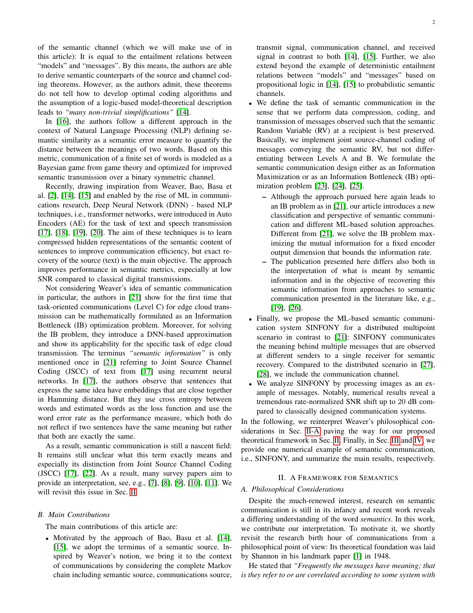
方法/架构图页：来自《Semantic Information Recovery in Wireless Networks》PDF p.2。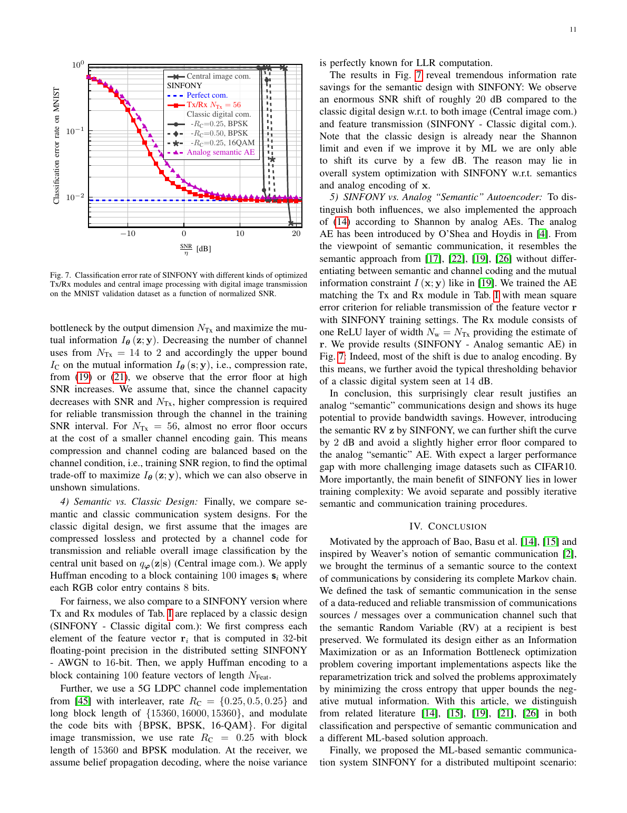
关键结果图/表页：来自《Semantic Information Recovery in Wireless Networks》PDF p.11。SINFONY 在分布式图像分类场景相对传统链路取得显著 rate-normalized SNR shift，显示 IB 约束下的语义表示能在少量 channel uses 下保持任务信息。
局限性与 Codex 判断
局限性：理论框架清晰，但实际实现中 $I(S;Y)$ 主要由 channel-use 维度间接控制，互信息本身没有逐 batch 精确估计。
判断：核心。方法设计直接以 IB/Infomax 为理论基础，不只是 introduction 提及。
Adaptive Information Bottleneck Guided Joint Source and Channel Coding for Image Transmission
基本信息
| 字段 | 内容 |
|---|
| 作者 | Lunan Sun, Yang Yang, Mingzhe Chen, Caili Guo, Walid Saad, H. Vincent Poor |
| 发表/来源 | IEEE Transactions on Wireless Communications / arXiv:2203.06492 / arXiv / 2023 |
| 标识 | arXiv:2203.06492 |
| 任务 | 图像 JSCC 重建，同时降低不必要传输信息。 |
数据集与 Baseline
| 字段 | 内容 |
|---|
| 数据集 | MNIST、CIFAR-10、SVHN、Cityscapes 等图像数据。 |
| Baseline | IABF、IB-JSCC fixed-beta、BPG/JPEG + channel coding、DeepJSCC 类方法。 |
| 评价指标 | MSE、PSNR、storage/transmitted data、downstream task accuracy、inference time。 |
| 信道类型 | DMC/BSC-like error channel、parallel channels 等；训练和测试 error probability 可变化。 |
| 实验条件 | 固定 codeword 长度时比较 MSE/PSNR；另比较达到同等 MSE 所需传输量。 |
Introduction 讲述逻辑
- DeepJSCC 通常固定信道资源并最小化重建 MSE，可能传输超过任务所需的信息。
- 传统 IB 面向有监督标签，不直接适用于无监督图像重建。
- 本文重新设计图像传输 IB 目标，并用自适应 beta 平衡重建质量和表示压缩。
方法概述
AIB-JSCC 仍是 autoencoder JSCC，但训练目标不是单纯 MSE，而是最大化接收码字关于输入图像的信息，同时压低发送码字关于输入图像的信息；beta 由训练过程中的 MSE 动态调整。
信息瓶颈理论具体如何用上
公式/目标：论文定义 $$IB_\beta(X,Y,\hat Y)=I(X;\hat Y)-\beta I(X;Y).$$ 训练时最大化其可微下界，等价最小化 $$\mathcal L=-\widehat I_{VL}(X;\hat Y)+\beta\widehat I_{CLUB}(X;Y),$$ 其中 $\widehat I_{VL}$ 是接收重建相关的 variational lower bound，$\widehat I_{CLUB}$ 是发送码字互信息的 CLUB upper bound。
变量含义：$X$ 原图，$Y$ encoder 产生的 codeword/channel input，$\hat Y$ noisy received codeword 或 decoder 输入；$\beta$ 控制压缩项权重；$\phi,\theta$ 是 encoder/decoder 与互信息估计器参数。
给定一个 batch 时如何计算：给定 batch 图像：1) encoder 得到 $y\sim p_\phi(y|x)$；2) 信道扰动得到 $\hat y$；3) decoder 得到重建 $\hat x$；4) 用 Gaussian likelihood 或 MSE 形式计算 $\widehat I_{VL}(X;\hat Y)$，本质上奖励 $\hat y$ 能重建 $x$；5) 用 CLUB 估计 $I(X;Y)$ 的上界，惩罚 $y$ 记住过多原图细节；6) 根据当前 epoch 的 batch/validation MSE 用 PID-like 自适应算法更新 $\beta$，再进入下一轮训练。
信道处理机制
信道作为训练图中的非训练层，error probability/channel state 参与损失计算；IB 的压缩项提高表示稳健性，避免 codeword 过拟合输入细节。
主要结果与图表
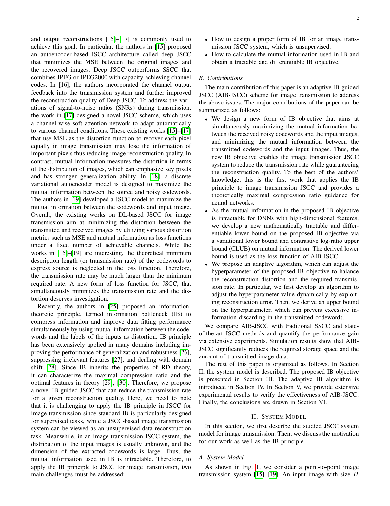
方法/架构图页：来自《Adaptive Information Bottleneck Guided Joint Source and Channel Coding for Image Transmission》PDF p.2。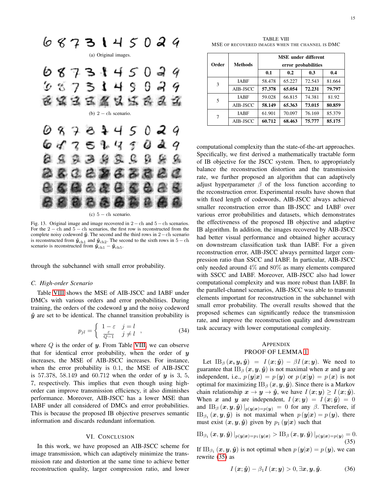
关键结果图/表页：来自《Adaptive Information Bottleneck Guided Joint Source and Channel Coding for Image Transmission》PDF p.15。AIB-JSCC 在多数据集上低于固定 beta IB-JSCC 和 IABF 的 MSE，并在同等重建误差下需要更少传输资源。
局限性与 Codex 判断
局限性：互信息估计依赖 VIMCO/CLUB 近似和额外估计器；目标更偏图像 JSCC，语义任务性不如分类/推理型 TSC 明确。
判断：核心。IB 是训练目标和 beta 自适应算法的中心。
Multi-Task-Oriented Broadcast for Edge AI Inference via Information Bottleneck
基本信息
| 字段 | 内容 |
|---|
| 作者 | Yuhan Yang, Youlong Wu, Shuai Ma, Yuanming Shi |
| 发表/来源 | IEEE GLOBECOM 2023 / IEEE / 2023 |
| 标识 | IEEE 10437085; DOI 10.1109/GLOBECOM54140.2023.10437085 |
| 任务 | 多用户广播信道上的多任务 edge AI inference。 |
数据集与 Baseline
| 字段 | 内容 |
|---|
| 数据集 | MultiMNIST 风格 stitched image，多任务二分类/分类推理。 |
| Baseline | Deep JSCC with BCE、Digital JPEG、task-independent broadcast baselines。 |
| 评价指标 | task error rate、robustness to channel noise、compression ratio n/r、SNR sweep。 |
| 信道类型 | degraded Gaussian broadcast channel。 |
| 实验条件 | two-phase training；每个任务 feature dimension 32，broadcast compact dimension 16 等设置。 |
Introduction 讲述逻辑
- 多用户广播中不同设备任务不同、信道质量不同，直接广播统一特征会面临准确率和鲁棒性折中。
- IB 可学习任务相关且压缩的特征，但需扩展到 broadcast。
- 本文提出两阶段 IB：先为每个任务提取特征，再压缩成鲁棒 broadcast signal。
方法概述
Phase I 对每个任务训练 VIB feature extractor；Phase II 用 DIB/VDIB 把多任务特征压成 common broadcast signal，并通过 broadcast channel 发送。
信息瓶颈理论具体如何用上
公式/目标：Phase I: $$\mathcal L_{IB,k}=H(Y_k|U_k)+\gamma I(X;U_k)$$，变分为 CE + KL。Phase II: $$\mathcal L_{DIB}=I(Z;U_{1:K})-\mu\sum_k I(U_k;\hat Z_k),$$ 用 VDIB 近似优化 broadcast robust representation。
变量含义：$X$ edge transmitter 输入，$U_k$ 第 k 个任务的 task-relevant feature，$Z$ compact broadcast signal，$\hat Z_k$ 第 k 个设备接收的 noisy broadcast signal，$Y_k$ 第 k 个任务标签。
给定一个 batch 时如何计算：batch 训练：Phase I 中 encoder 得到 $u_k$，task head 计算 BCE/CE，同时 KL 压缩 $u_k$；Phase II 中 broadcast encoder 把 $u_{1:K}$ 压成 $z$，通过 degraded Gaussian channel 得到各用户 $\hat z_k$，各 task head 计算 BCE/CE，另用 KL/variational terms 约束 $z$ 不携带冗余多任务特征。
信道处理机制
直接面向 degraded broadcast channel；IB 的第二阶段把信道鲁棒性和多任务共享压缩放在同一训练目标里。
主要结果与图表
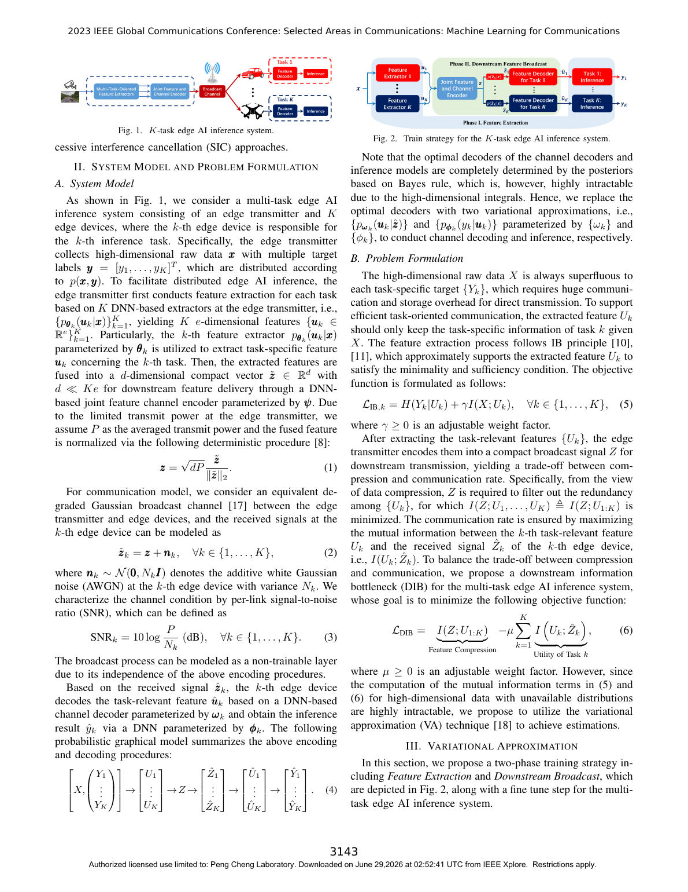
方法/架构图页：来自《Multi-Task-Oriented Broadcast for Edge AI Inference via Information Bottleneck》PDF p.2。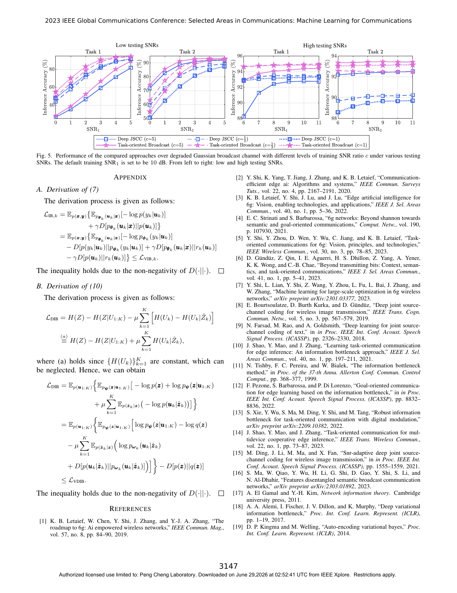
关键结果图/表页：来自《Multi-Task-Oriented Broadcast for Edge AI Inference via Information Bottleneck》PDF p.6。相比 Deep JSCC 和 digital JPEG，IB broadcast 在多 SNR/压缩比下有更好的错误率与鲁棒性折中。
局限性与 Codex 判断
局限性：会议版较短，任务和数据集相对合成；后续 TWC rate-splitting 版更完整。
判断：核心/先导。IB 是广播特征提取和压缩的核心目标。
Robust Information Bottleneck for Task-Oriented Communication with Digital Modulation
基本信息
| 字段 | 内容 |
|---|
| 作者 | Songjie Xie, Shuai Ma, Ming Ding, Yuanming Shi, MingJian Tang, Youlong Wu |
| 发表/来源 | IEEE Journal on Selected Areas in Communications, 2023 / arXiv / 2023 |
| 标识 | arXiv:2209.10382 |
| 任务 | 任务导向通信/分类，兼容数字调制。 |
数据集与 Baseline
| 字段 | 内容 |
|---|
| 数据集 | MNIST、CIFAR-10 等分类数据集。 |
| Baseline | DeepJSCC、VIB/IB variants、traditional digital modulation baselines。 |
| 评价指标 | classification accuracy、robustness under SNR/channel variation、semantic representation quality。 |
| 信道类型 | 数字调制链路，PSK/BPSK 等离散调制；考虑信道扰动。 |
| 实验条件 | 不同 SNR、调制阶数和 beta 设置。 |
Introduction 讲述逻辑
- Task-oriented communication 去掉冗余后更脆弱，且连续 JSCC 与现代数字调制系统不完全兼容。
- 普通 IB 追求 minimal sufficient representation，但没有把传输鲁棒性写入目标。
- 本文提出 Robust Information Bottleneck，使表示同时 task-informative、compact、channel-robust。
方法概述
编码器产生任务语义表示并映射到数字调制符号，信道后接收表示用于分类。RIB 把接收端任务信息、发送-接收保真度和输入冗余三者放在同一个互信息目标中。
信息瓶颈理论具体如何用上
公式/目标：$$\max I(Y;\hat Z)+\beta\left[I(Z;\hat Z)-I(X;\hat Z)\right].$$ $I(Y;\hat Z)$ 保证任务标签可推断，$I(Z;\hat Z)$ 保证传输鲁棒/保真，$I(X;\hat Z)$ 惩罚接收表示携带过多输入无关信息。
变量含义：$X$ 输入样本，$Y$ 任务标签，$Z$ 发送端语义表示/调制前表示，$\hat Z$ 经信道和解调后的接收表示，$\beta$ 控制鲁棒冗余与压缩的权衡。
给定一个 batch 时如何计算：一个 batch 中：1) encoder 得到 $Z$，并经数字调制和信道得到 $\hat Z$；2) classifier 对 $\hat Z$ 预测标签，交叉熵近似 $-I(Y;\hat Z)$；3) 用变分分布/互信息估计器估计 $I(Z;\hat Z)$，奖励接收表示保留发送表示；4) 估计或上界 $I(X;\hat Z)$，惩罚输入冗余；5) 三项按 RIB 目标合成为 batch loss 反向传播。
信道处理机制
显式把信道失真后的 $\hat Z$ 放进 IB 目标，目标中的 $I(Z;\hat Z)$ 正是为抗信道扰动保留必要冗余。
主要结果与图表
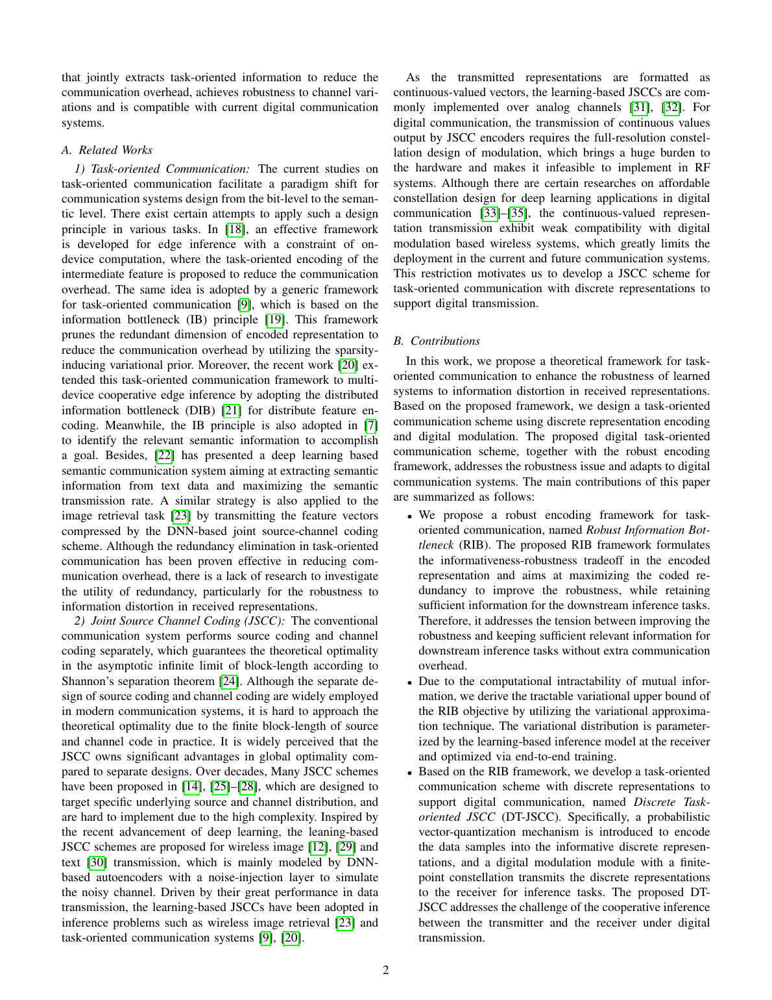
方法/架构图页：来自《Robust Information Bottleneck for Task-Oriented Communication with Digital Modulation》PDF p.2。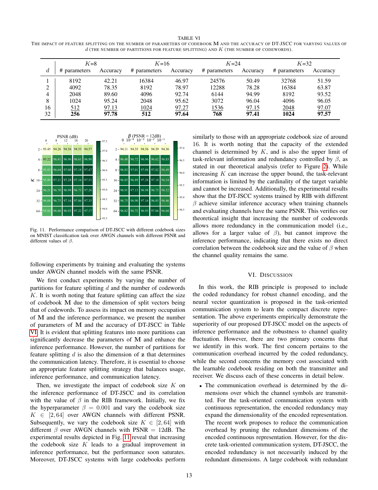
关键结果图/表页：来自《Robust Information Bottleneck for Task-Oriented Communication with Digital Modulation》PDF p.13。RIB 在数字调制条件下比单纯 CE/普通 IB 更稳健，能在低 SNR 或调制受限时保持更好的任务准确率。
局限性与 Codex 判断
局限性：互信息项需要变分近似；RIB 的 beta 和调制配置仍需实验调参。
判断：核心。它是本主题最典型的 RIB 方法论文。
Semantic Communications Based on Adaptive Generative Models and Information Bottleneck
基本信息
| 字段 | 内容 |
|---|
| 作者 | Sergio Barbarossa, Danilo Comminiello, Eleonora Grassucci, Francesco Pezone, Stefania Sardellitti, Paolo Di Lorenzo |
| 发表/来源 | arXiv:2309.02387 / IEEE Communications Magazine style / arXiv / 2023 |
| 标识 | arXiv:2309.02387 |
| 任务 | 基于生成模型的图像/语义重建与分类任务通信。 |
数据集与 Baseline
| 字段 | 内容 |
|---|
| 数据集 | 图像重建示例；生成模型/VAE latent representation。 |
| Baseline | 传统符号级恢复、固定 latent 维度生成模型、无自适应 bottleneck 版本。 |
| 评价指标 | reconstruction accuracy/MSE、delay、transmit power、channel-aware symbol count。 |
| 信道类型 | 无线信道状态驱动在线 bottleneck 调整。 |
| 实验条件 | 根据 channel state 在线改变发送 latent symbols 数量。 |
Introduction 讲述逻辑
- 语义通信不需要逐符号复原，而是要恢复等价语义。
- 生成模型可在接收端重建内容，但需要决定传多少 latent 信息。
- 本文用 IB 原理把表示复杂度、重建精度、发射功率/延迟联系起来。
方法概述
发送端 recognition model 把输入映射到 latent variable，接收端 generative model 用收到的 latent 生成图像或执行任务；IB 用来选择和调节要发送的 latent 维度/符号数。
信息瓶颈理论具体如何用上
公式/目标：论文给出的改造 IB 形式是 $$\min I(X;T)+\beta\,\mathrm{MSE}(Y,\hat Y),$$ 其中 $I(X;T)$ 表示 latent 表示复杂度/通信开销，MSE 表示语义目标或重建失真。
变量含义：$X$ 输入数据，$T$ 生成模型 latent representation，$Y$ 目标语义/原始内容，$\hat Y$ 接收端生成结果，$\beta$ 平衡少传 latent 与保持准确重建。
给定一个 batch 时如何计算：对一个 batch：1) recognition encoder 产生 latent posterior 或 latent code $T$；2) 根据当前信道状态选择发送的 latent components；3) receiver/generative decoder 得到 $\hat Y$；4) 计算重建 MSE 或任务误差；5) 计算 latent 信息复杂度，VAE 实现中通常对应 posterior 与 prior 的 KL 或被选择 latent 维度的信息量；6) 优化 $I(X;T)+\beta MSE$，并在线调节 bottleneck 强度。
信道处理机制
信道状态不是简单噪声层，而是决定 bottleneck 的在线控制量：信道差时减少/改变传输 latent，信道好时允许更多 latent 保真。
主要结果与图表
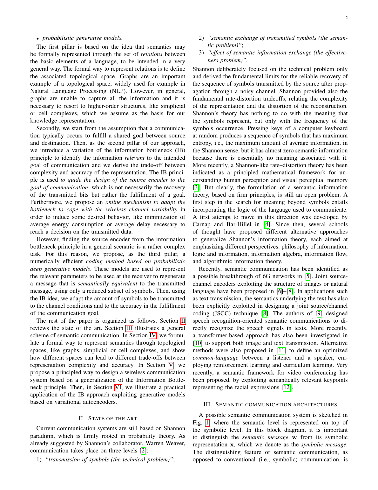
方法/架构图页：来自《Semantic Communications Based on Adaptive Generative Models and Information Bottleneck》PDF p.2。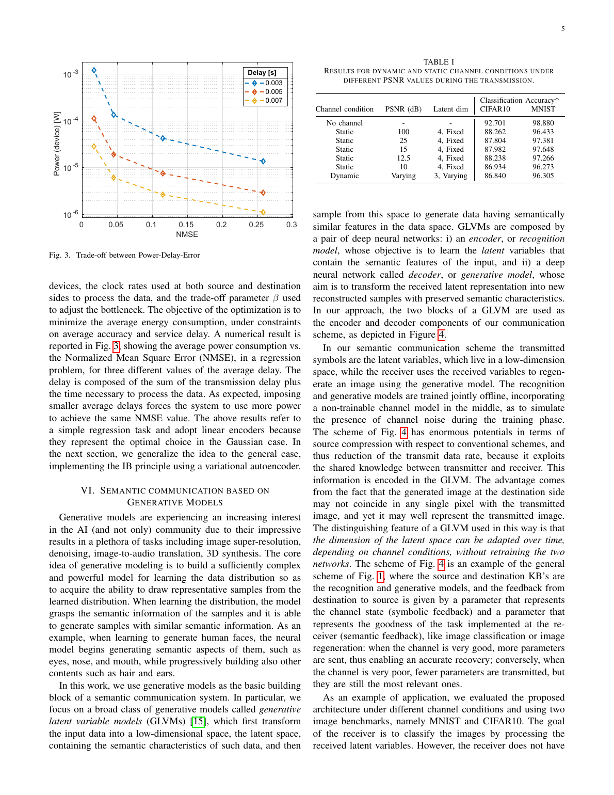
关键结果图/表页：来自《Semantic Communications Based on Adaptive Generative Models and Information Bottleneck》PDF p.5。展示了生成模型与自适应 IB 可在不同信道状态下调节传输率并保持可接受语义恢复。
局限性与 Codex 判断
局限性：偏 conceptual/framework，实验细节和统一可复现实验不如后续 TWC/JSAC 论文完整。
判断：核心。IB 直接参与生成语义通信系统的 rate-accuracy-delay tradeoff。
Disentangled Information Bottleneck guided Privacy-Protective JSCC for Image Transmission
基本信息
| 字段 | 内容 |
|---|
| 作者 | Lunan Sun, Yang Yang, Mingzhe Chen, Caili Guo |
| 发表/来源 | arXiv:2309.10263 / arXiv / 2024 |
| 标识 | arXiv:2309.10263 |
| 任务 | 隐私保护图像 JSCC；把 public/private information disentangle。 |
数据集与 Baseline
| 字段 | 内容 |
|---|
| 数据集 | MNIST、CIFAR-10/SVHN 等图像数据。 |
| Baseline | privacy-protective JSCC、adversarial JSCC、separate image compression/coding。 |
| 评价指标 | reconstruction quality、eavesdropping accuracy、inference time。 |
| 信道类型 | 无线图像传输信道；合法接收端和 eavesdropper 接收端。 |
| 实验条件 | private subcodeword 加密，public subcodeword 公开传输。 |
Introduction 讲述逻辑
- JSCC 的 channel input 与原图高度相关，容易泄露隐私。
- 已有方法直接去除隐私信息会损害合法接收端重建。
- 本文用 DIB 把 public/private subcodewords 分离：公开部分不含隐私，私有部分加密传输。
方法概述
encoder 被拆成 public encoder 和 private encoder，分别输出 $Y^t$ 与 $Y^s$。DIB 训练让 $Y^s$ 包含 private attribute，$Y^t$ 与 $Y^s$ 尽量独立，并保持图像重建质量。
信息瓶颈理论具体如何用上
公式/目标：DIB 目标包含三类互信息：最大化 private subcodeword 与 private label 的 $I(Y^s;S)$，最小化 public/private subcodewords 之间的 $I(Y^t;Y^s)$，并最小化重建失真 $d(X,\hat X)$。论文再用变分近似和 density-ratio trick 得到可微 loss。
变量含义：$X$ 图像，$S$ private attribute，$Y^t$ public subcodeword，$Y^s$ private subcodeword，$\hat X$ 合法接收端重建，Eve 用接收码字估计 $S$。
给定一个 batch 时如何计算：对 batch：1) public/private encoder 得到 $y^t,y^s$；2) classifier 从 $y^s$ 预测 private label，用 CE 奖励 $I(Y^s;S)$；3) density-ratio discriminator 估计 $I(Y^t;Y^s)$，训练时惩罚两者相关；4) decoder 用 $y^t,y^s$ 重建图像并计算 MSE/重建 loss；5) 加密器/解密器按最大熵原则训练，使窃听者在没有密码时对 private 信息不确定。
信道处理机制
合法端有解密后的 private subcodeword，窃听端缺少密码；信道影响重建和窃听准确率，但 IB 主要处理 public/private 表示分解。
主要结果与图表
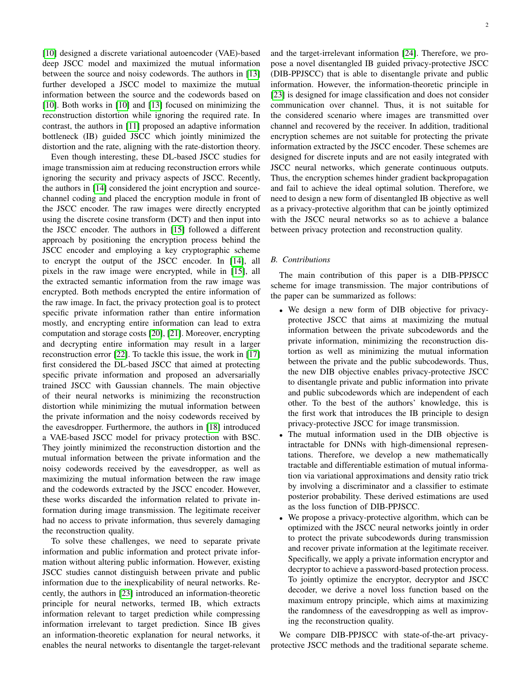
方法/架构图页：来自《Disentangled Information Bottleneck guided Privacy-Protective JSCC for Image Transmission》PDF p.2。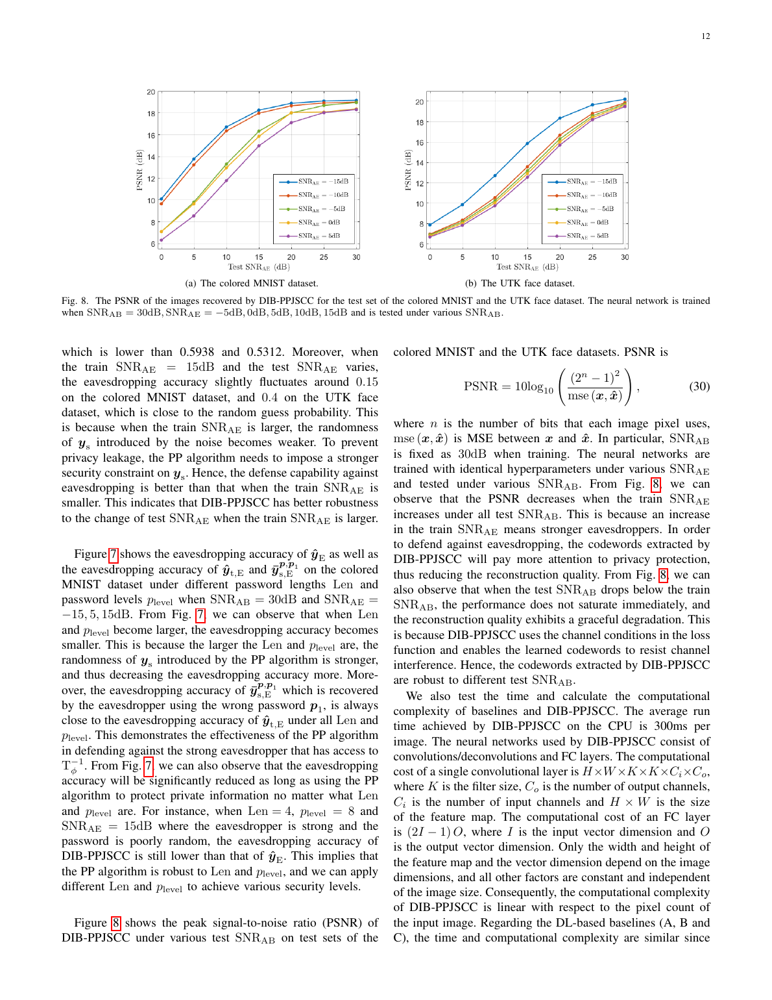
关键结果图/表页：来自《Disentangled Information Bottleneck guided Privacy-Protective JSCC for Image Transmission》PDF p.12。DIB-PPJSCC 降低 eavesdropping private-attribute accuracy，同时保持或提升合法图像重建质量和推理速度。
局限性与 Codex 判断
局限性：需要明确 private attribute 标签；隐私保护依赖属性定义和加密模块。
判断：核心。DIB 是 public/private 语义分解的训练目标。
Improving Channel Resilience for Task-Oriented Semantic Communications: A Unified Information Bottleneck Approach
基本信息
| 字段 | 内容 |
|---|
| 作者 | Shuai Lyu, Yao Sun, Linke Guo, Xiaoyong Yuan, Fang Fang, Lan Zhang, Xianbin Wang |
| 发表/来源 | arXiv:2405.00135 / IEEE Communications Letters under review / arXiv / 2024 |
| 标识 | arXiv:2405.00135 |
| 任务 | 任务导向语义通信中的 feature-level channel resilience；案例是 OFDM/subchannel allocation。 |
数据集与 Baseline
| 字段 | 内容 |
|---|
| 数据集 | 图像分类数据集；VGG16 作为 encoder/decoder backbone。 |
| Baseline | 随机或非 IB 的 subchannel allocation、平均分配、无 channel-resilient mask 方案。 |
| 评价指标 | inference accuracy、robustness under dynamic subchannels、SNR sweep。 |
| 信道类型 | OFDM/频率选择性子信道；16 pilots，data subcarriers 512；SNR/subchannel 动态变化。 |
| 实验条件 | IB hyperparameter beta=0.3；对 encoded feature units 注入人工噪声估计鲁棒性。 |
Introduction 讲述逻辑
- TSC 已能压缩任务相关信息，但通常忽视不同 feature units 对信道错误的敏感性差异。
- OFDM 宽带信道中不同 subchannel 质量不同，敏感 feature 若落到坏子信道会导致错误推理。
- 本文用 IB 解释 feature robustness，并把结果用于子信道分配。
方法概述
固定已训练 TSC encoder/decoder，在 encoded features 上引入人工噪声 $\sigma$，用 IB 目标评估哪些 feature 在保持标签信息同时对输入冗余更敏感，再生成 robustness mask 做 subchannel allocation。
信息瓶颈理论具体如何用上
公式/目标：基础目标 $$\min \mathcal L(\phi,\theta)=-I(\hat Z;Y)+\beta I(\hat Z;X).$$ 鲁棒性估计中引入人工噪声得到 $$\min \mathcal L(\sigma)=-I(\tilde Z;Y|\phi,\theta)+\beta I(\tilde Z;X|\phi,\theta).$$
变量含义：$X$ 输入，$Y$ 任务标签，$\hat Z$ 接收特征，$\tilde Z$ 是在 encoded feature 上加人工噪声后的表示，$\sigma$ 表示各 feature unit 的噪声/扰动强度，$\beta$ 控制压缩项。
给定一个 batch 时如何计算：给定 batch：1) 用固定 encoder 产生 feature map $Z$；2) 对某个 feature unit 或 mask 加人工噪声得到 $\tilde Z$；3) decoder/classifier 输出标签概率并计算交叉熵，作为 $-I(\tilde Z;Y)$ 的替代；4) 用 KL 上界估计 $I(\tilde Z;X)$；5) 对不同 feature unit 得到 robustness score；6) 将敏感/重要 feature 分配到质量更好的 OFDM subchannels。
信道处理机制
不是只训练一个抗噪 encoder，而是把 IB 估计结果映射到实际 radio resource allocation，显式利用子信道质量差异。
主要结果与图表
 方法/架构图页：来自《Improving Channel Resilience for Task-Oriented Semantic Communications: A Unified Information Bottleneck Approach》PDF p.2。
方法/架构图页：来自《Improving Channel Resilience for Task-Oriented Semantic Communications: A Unified Information Bottleneck Approach》PDF p.2。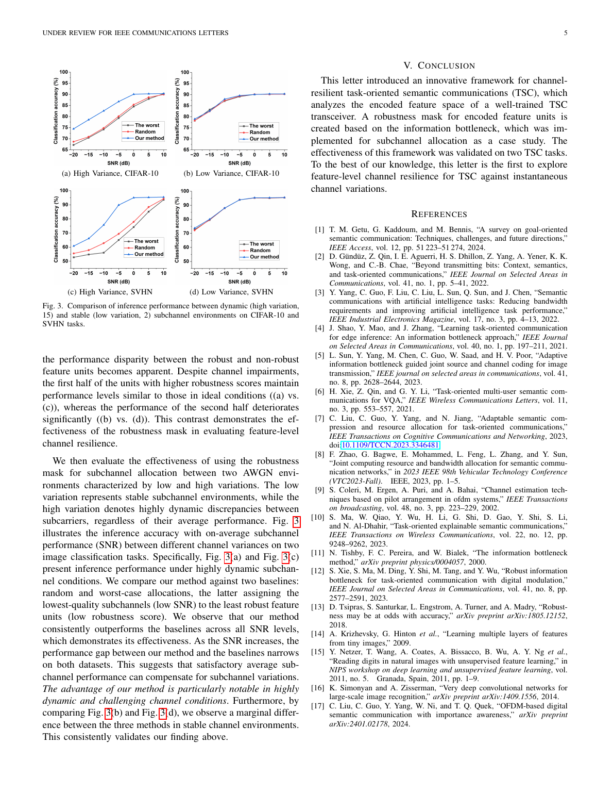
关键结果图/表页：来自《Improving Channel Resilience for Task-Oriented Semantic Communications: A Unified Information Bottleneck Approach》PDF p.5。在动态 subchannel 条件下，IB-based allocation 比基线保持更高推理准确率。
局限性与 Codex 判断
局限性：IB 主要用于 feature sensitivity/分配，而不是端到端共同优化整个语义编解码器。
判断：核心。论文的方法主体就是 IB robustness mask。
Privacy-Preserving Task-Oriented Semantic Communications Against Model Inversion Attacks
基本信息
| 字段 | 内容 |
|---|
| 作者 | Yanhu Wang, Shuaishuai Guo, Yiqin Deng, Haixia Zhang, Yuguang Fang |
| 发表/来源 | arXiv:2312.03252 / IEEE Transactions-style manuscript / arXiv / 2024 |
| 标识 | arXiv:2312.03252 |
| 任务 | 隐私保护任务导向语义通信，抵抗 model inversion attack。 |
数据集与 Baseline
| 字段 | 内容 |
|---|
| 数据集 | MNIST、CIFAR-10、ImageNet-2012 额外实验。 |
| Baseline | NECST-G、NECST-G-DP、ESCS、IBAL-D-NO、加密增强版本等。 |
| 评价指标 | classification accuracy、SSIM/PSNR privacy指标、privacy-utility tradeoff。 |
| 信道类型 | AWGN、Rayleigh fading；IBAL-D 考虑动态 SNR。 |
| 实验条件 | 静态/动态信道；lambda 与 MGDA 自适应权重；model inversion adversary。 |
Introduction 讲述逻辑
- 只传任务相关特征并不能自动防止隐私泄露，攻击者可用 model inversion 重建输入。
- 直接差分隐私加噪会牺牲任务性能。
- 本文结合 IB 和 adversarial learning，在保留标签信息同时压缩输入隐私信息。
方法概述
IBAL 的 transmitter 提取任务相关特征，receiver 做分类，adversary decoder 试图从 transmitted feature 重建输入。训练交替进行：先训练 adversary decoder，再训练通信网络欺骗 adversary。
信息瓶颈理论具体如何用上
公式/目标：IB 部分为 $$\mathcal L_{IB}=-I(\hat Z;Y)+\beta I(\hat Z;S).$$ 变分上界可写为 $$\mathbb E[-\log q_\phi(y|\hat z)]+\beta\,\mathrm{KL}(p_\theta(\hat z|s)\|q(\hat z)).$$ 总目标再结合 adversarial reconstruction/privacy loss，IBAL-D 用信道噪声项调整隐私权重。
变量含义：$S$ 原始输入，$Y$ 任务标签，$Z/\hat Z$ 发端/经信道特征，$q_\phi(y|\hat z)$ 是 receiver classifier，$p_\theta(\hat z|s)$ 是编码+信道诱导分布，$q(\hat z)$ 是变分 prior。
给定一个 batch 时如何计算：一个训练循环：1) 用当前 transmitter 产生特征并过信道；2) adversary decoder 最小化 MSE 重建输入，模拟攻击者；3) transmitter/receiver 用真实标签计算分类 CE；4) 计算 KL 压缩项惩罚特征保留过多输入信息；5) 同时让 adversary 重建误差变大，形成 privacy loss；6) MGDA/自适应权重在分类性能、IB 压缩、隐私重建失真之间求折中。
信道处理机制
信道进入 $p_\theta(\hat z|s)=p_\theta(z|s)p_{channel}(\hat z|z)$，IBAL-D 还根据噪声方差动态调整隐私保护强度。
主要结果与图表
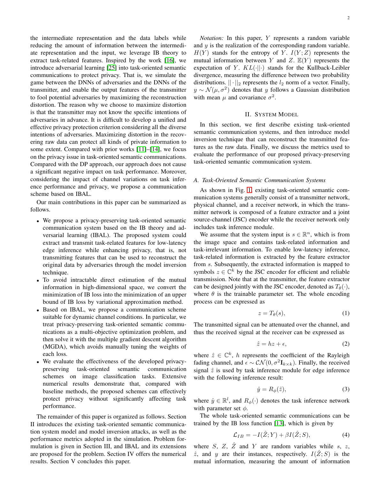
方法/架构图页：来自《Privacy-Preserving Task-Oriented Semantic Communications Against Model Inversion Attacks》PDF p.2。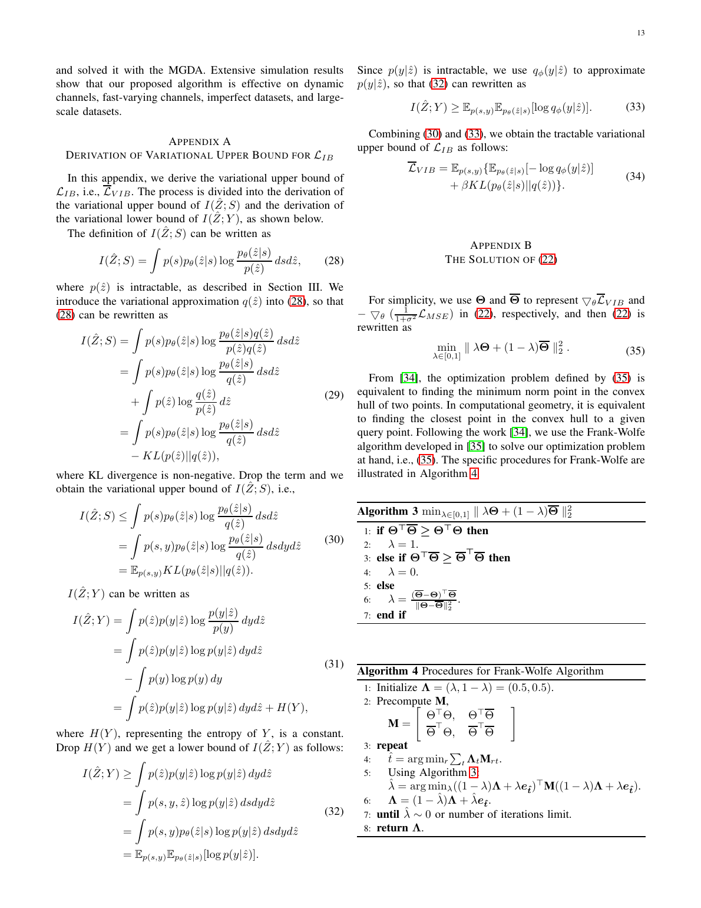
关键结果图/表页：来自《Privacy-Preserving Task-Oriented Semantic Communications Against Model Inversion Attacks》PDF p.13。IBAL 在保持较好分类准确率同时显著降低 SSIM/PSNR 重建质量，相比 DP baseline 有更好的 privacy-utility tradeoff。
局限性与 Codex 判断
局限性：训练复杂，需要模拟 adversary；隐私评估依赖所选 inversion model 和图像相似性指标。
判断：核心。IB 不是背景概念，而是隐私语义通信 loss 的主体。
Contrastive Learning and Adversarial Disentanglement for Privacy-Aware Task-Oriented Semantic Communication
基本信息
| 字段 | 内容 |
|---|
| 作者 | Omar Erak, Omar Alhussein, Wen Tong |
| 发表/来源 | arXiv:2410.22784 / arXiv / 2025 |
| 标识 | arXiv:2410.22784 |
| 任务 | 6G-IoT privacy-aware task-oriented semantic communication。 |
数据集与 Baseline
| 字段 | 内容 |
|---|
| 数据集 | 图像/IoT 分类任务数据；论文报告多个隐私和任务实验。 |
| Baseline | standard task-oriented SemCom、adversarial/privacy baselines、contrastive/disentanglement ablations。 |
| 评价指标 | task accuracy、privacy leakage、semantic extraction quality、Information Retention Index (IRI)。 |
| 信道类型 | 任务导向通信链路；关注带宽与隐私而非特定数字调制。 |
| 实验条件 | contrastive encoder + adversarial disentanglement；IRI 作为 MI proxy。 |
Introduction 讲述逻辑
- 任务导向 SemCom 只传任务相关信息，但特征仍可能包含 task-irrelevant private information。
- 直接估计最小充分表示的 mutual information 很难复现。
- 本文提出 IB-inspired CLAD，用 contrastive learning 保留任务相关信息，用 adversarial disentanglement 丢弃无关信息。
方法概述
CLAD 不是直接写传统 IB loss，而是用对比学习近似 sufficiency，用 adversarial branch 压制 task-irrelevant/private 信息，并提出 IRI 作为 encoded feature 对输入保留信息量的 proxy。
信息瓶颈理论具体如何用上
公式/目标：IB 思想对应 $$\max I(Z;Y)-\beta I(Z;X_{private/noise})$$。CLAD 的实现把 $I(Z;Y)$ 替换为 supervised/contrastive task loss，把最小性替换为 adversarial disentanglement loss 和 IRI 监控。
变量含义：$X$ 输入，$Y$ 任务标签，$Z$ 编码语义特征，task-irrelevant/private factor 是 adversary 试图预测但 encoder 需要抑制的内容；IRI 用作 $I(Z;X)$ 的相对代理指标。
给定一个 batch 时如何计算：对 batch：1) encoder 输出 $z$；2) contrastive loss 拉近同类/同任务相关样本、推远不同类，增强 $Z$ 对 $Y$ 的充分性；3) task head 用 CE 计算任务损失；4) adversarial head 尝试从 $z$ 预测隐私/无关属性，encoder 通过梯度反转或对抗优化让该预测失败；5) 计算 IRI 观察 $z$ 对输入的保留程度；6) 总 loss 在任务准确和隐私最小之间折中。
信道处理机制
主要研究语义特征本身的 privacy-aware bottleneck，信道建模不是核心贡献。
主要结果与图表
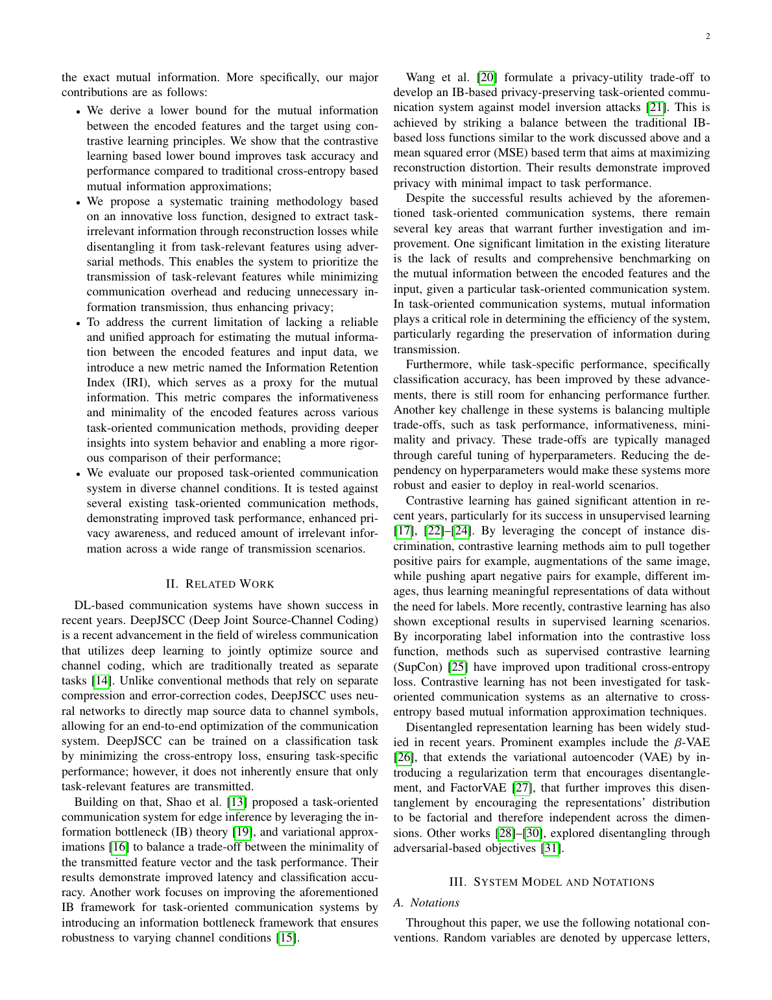
方法/架构图页：来自《Contrastive Learning and Adversarial Disentanglement for Privacy-Aware Task-Oriented Semantic Communication》PDF p.2。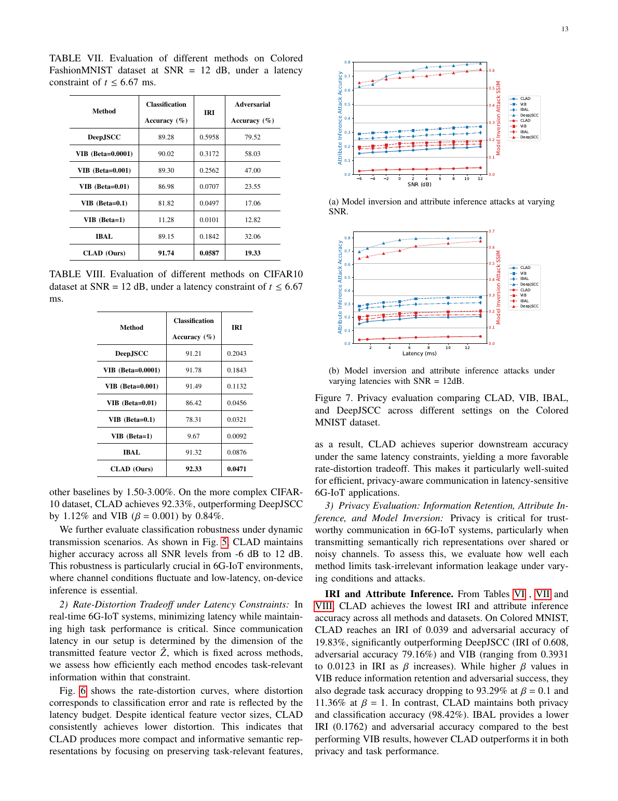
关键结果图/表页：来自《Contrastive Learning and Adversarial Disentanglement for Privacy-Aware Task-Oriented Semantic Communication》PDF p.13。CLAD 在任务性能、隐私保护和 IRI 上优于若干 baselines。
局限性与 Codex 判断
局限性：IB 是 inspired/代理实现而非完整互信息变分推导；需要后续补读代码和实验细节。
判断：核心但需继续丰富。方法设计明确以 IB minimal sufficient representation 为中心。
Information Bottleneck Guided Joint Source-Channel Coding with HARQ
基本信息
| 字段 | 内容 |
|---|
| 作者 | Haoxuan Zhang, Lunan Sun, Caili Guo, Yang Yang |
| 发表/来源 | IEEE WCNC 2025 / IEEE / 2025 |
| 标识 | IEEE 10978742; DOI 10.1109/WCNC61545.2025.10978742 |
| 任务 | 图像 JSCC + HARQ 重传；压缩 retransmission redundancy。 |
数据集与 Baseline
| 字段 | 内容 |
|---|
| 数据集 | Cityscapes 图像训练/测试。 |
| Baseline | Deep JSCC、HARQ-JSCC、BPG + LDPC、SSCC HARQ。 |
| 评价指标 | PSNR、visual reconstruction、SNR train/test robustness。 |
| 信道类型 | AWGN；两轮/多轮 retransmission 的 HARQ-JSCC。 |
| 实验条件 | SNRtrain=5 dB 等；比较 beta=0 与 beta>0。 |
Introduction 讲述逻辑
- HARQ-JSCC 能改善恶劣信道下重建，但重传信号可能包含大量与第一次接收重复的信息。
- 只最小化多轮重建 MSE 没有显式压缩重传冗余。
- 本文把 IB 引入 HARQ-JSCC，使第二次/重传信号补充而不是重复信息。
方法概述
第一轮 encoder/decoder 得到初始接收表示和重建；第二轮 encoder 根据原图和/或第一轮信息生成重传信号。IB 目标鼓励重传减少冗余并提升最终重建。
信息瓶颈理论具体如何用上
公式/目标：论文设计 HARQ-IBJSC 目标，核心思想为最大化 $I(X;\hat Z_1,\hat Z_2)$ 同时惩罚重传与已有接收信息的冗余互信息；再推导可微 lower bound 作为训练 loss。beta=0 时退化为类似 HARQ-JSCC 的 MSE 目标。
变量含义：$X$ 原图，$\hat Z_1$ 第一轮接收信息，$\hat Z_2$ 重传接收信息，$r(x|\hat z_1,\hat z_2)$ 是变分重建 posterior，$E_\gamma$ 是 MI estimator。
给定一个 batch 时如何计算：训练 batch：1) 第一轮 encoder 发送并经信道得到 $\hat z_1$，decoder 得到初始重建；2) 第二轮 encoder 产生重传信号，经信道得到 $\hat z_2$；3) 最终 decoder 用 $\hat z_1,\hat z_2$ 重建图像并计算 MSE/likelihood 项；4) 训练 MI estimator 估计重传与已有信息/原图之间的互信息；5) 用下界 loss 更新第二轮 encoder/decoder，让 $\hat z_2$ 更像增量语义信息。
信道处理机制
HARQ 本身处理信道失败；IB 进一步约束重传内容，减少重复传输并提升低 SNR 重建。
主要结果与图表
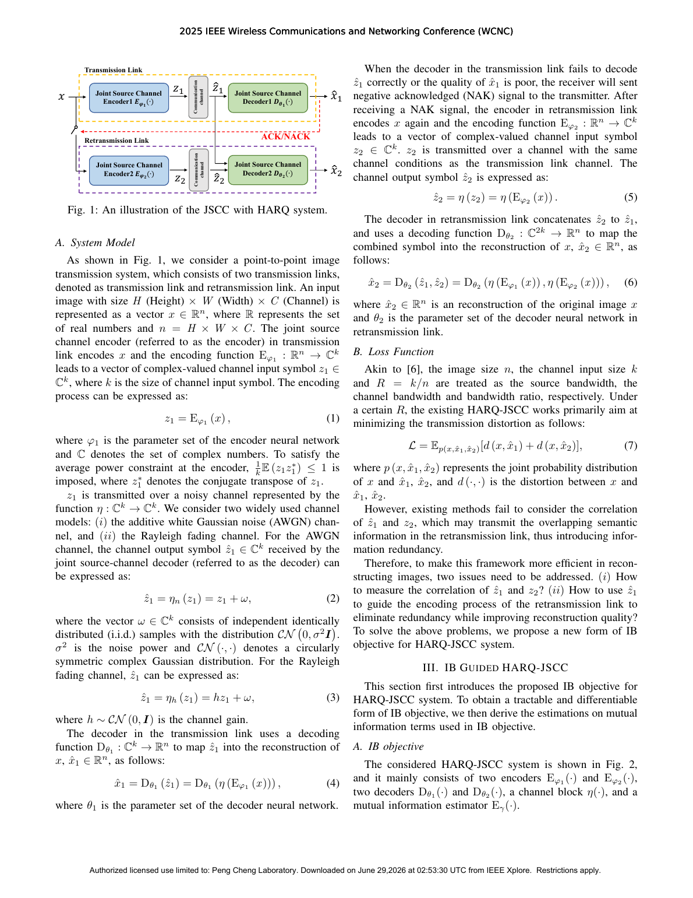
方法/架构图页：来自《Information Bottleneck Guided Joint Source-Channel Coding with HARQ》PDF p.2。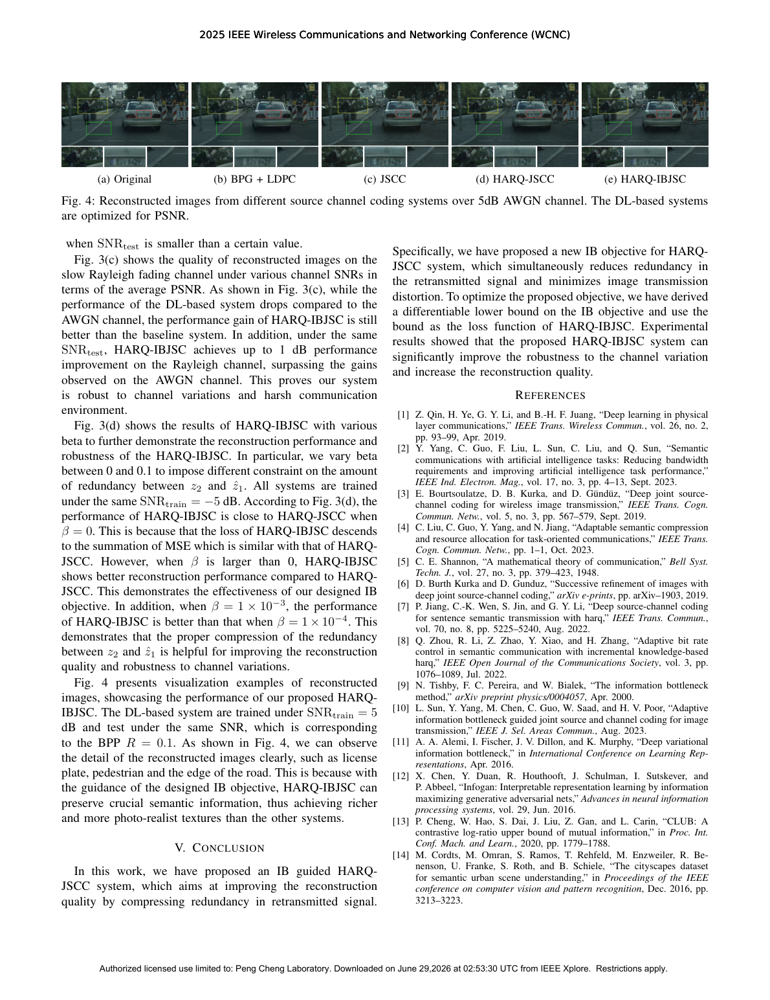
关键结果图/表页：来自《Information Bottleneck Guided Joint Source-Channel Coding with HARQ》PDF p.6。HARQ-IBJSC 相比 HARQ-JSCC 在多种 SNR 下提升 PSNR，最高约 1 dB。
局限性与 Codex 判断
局限性：会议论文篇幅短，IB 目标细节和更多语义任务验证还有扩展空间。
判断：核心。IB 直接定义 HARQ 重传训练目标。
Multi-Modal Multi-Task Semantic Communication: A Distributed Information Bottleneck Perspective
基本信息
| 字段 | 内容 |
|---|
| 作者 | Nguyen et al. |
| 发表/来源 | arXiv:2510.04000 / arXiv / 2025 |
| 标识 | arXiv:2510.04000 |
| 任务 | 多模态多任务分布式语义通信；任务感知 modality selection。 |
数据集与 Baseline
| 字段 | 内容 |
|---|
| 数据集 | AV-MNIST、MM-Fi 多模态人体/动作数据。 |
| Baseline | VDDIB、RS-DIB、MI-DIB/TADIB-prev、DLSC、full participation DIB。 |
| 评价指标 | negative cross entropy/relevance、Top-1 accuracy、MPJPE/MSE、sum-rate、active links、training time。 |
| 信道类型 | 分布式设备到接收端的多模态链路；带 hard link constraints。 |
| 实验条件 | pTADIB 用概率松弛选择任务-模态链接；使用 common randomness 协调选择。 |
Introduction 讲述逻辑
- 多模态多任务 SemCom 不能简单让所有模态全部参与，链路受限时需要按任务选择最有用模态。
- 标准 DIB 适合多 encoder，但缺少任务感知和硬链路约束。
- 本文提出 TADIB/pTADIB，使 modality selection 成为 IB 优化的一部分。
方法概述
TADIB 把每个 task-modality pair 的 rate-relevance 贡献写成 DIB 分数，再用概率松弛从离散选择转为可训练策略，训练后在推理时采样/确定 active links。
信息瓶颈理论具体如何用上
公式/目标：标准 DIB 类目标含 $$H(Y_t|Z_{m,t})+I(X_m;Z_{m,t}).$$ TADIB 对 task t 和 modality m 计算 task-modality score，并在 pTADIB 中把 selection variable 的期望加入目标；经验变分目标用 CE/MSE 估计 $H(Y|Z)$，用 KL 估计 $I(X;Z)$。
变量含义：$X_m$ 是第 m 个 modality，$Z_{m,t}$ 是该 modality 为任务 t 编码的 latent，$Y_t$ 是任务输出，selection variable 决定该 modality-task link 是否激活。
给定一个 batch 时如何计算：一个 batch：1) 同步抽取各模态样本；2) 对每个 modality-task encoder 得到 latent posterior；3) 用 decoder/head 预测任务并计算 CE 或 MSE；4) 计算 posterior-prior KL 作为 rate；5) 由可学习选择策略给每个 link 权重/概率；6) 对所有被选择或按概率加权的 task-modality IB 项求和，外加 link constraint/coordination regularizer，反向传播。
信道处理机制
主要体现在 link budget/active links 上，而不是物理层噪声；TADIB 关心在有限链路下最大化 relevance。
主要结果与图表
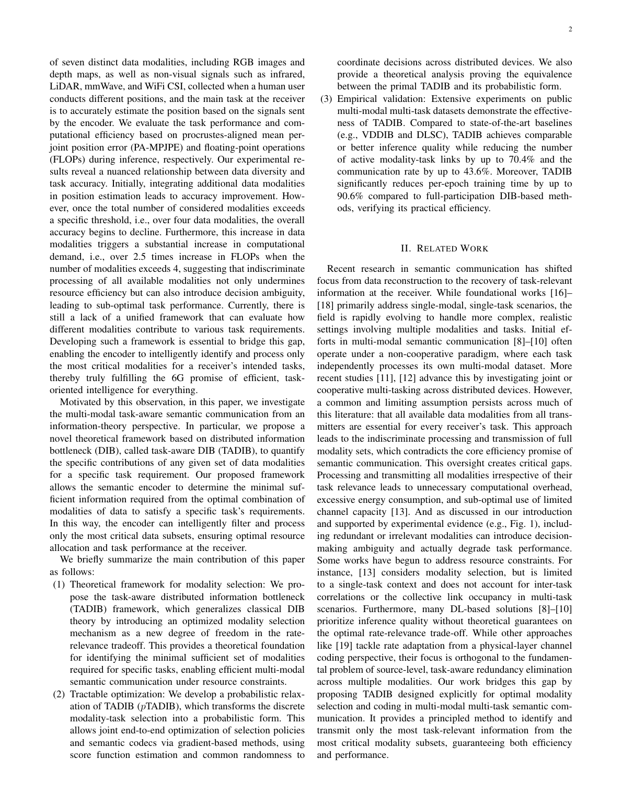
方法/架构图页：来自《Multi-Modal Multi-Task Semantic Communication: A Distributed Information Bottleneck Perspective》PDF p.2。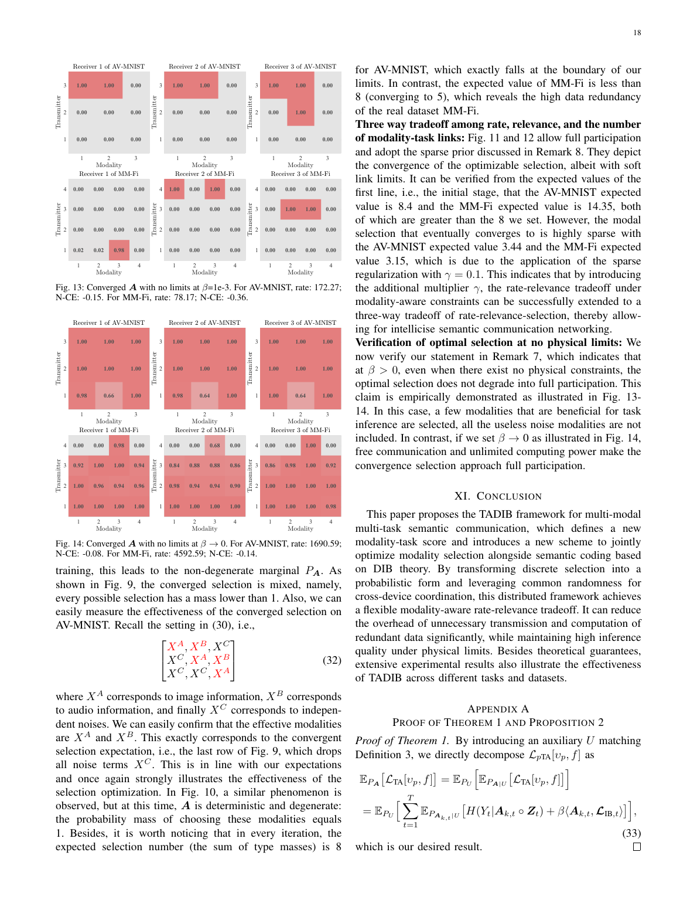
关键结果图/表页：来自《Multi-Modal Multi-Task Semantic Communication: A Distributed Information Bottleneck Perspective》PDF p.18。pTADIB 在 AV-MNIST 和 MM-Fi 上在满足硬链路约束时接近或超过 full DIB baseline，并显著减少 active links 和训练时间。
局限性与 Codex 判断
局限性：2025 arXiv 预印本；具体无线物理信道建模较弱，偏分布式语义选择理论。
判断：核心。DIB 是方法的理论主体。
Task-Agnostic Semantic Communications Relying on Information Bottleneck and Federated Meta-Learning
基本信息
| 字段 | 内容 |
|---|
| 作者 | Hao Wei, Wenjing Xu, Peiying Zhang et al. |
| 发表/来源 | arXiv:2504.21723 / IEEE record 11264466 / arXiv / 2025 |
| 标识 | arXiv:2504.21723 |
| 任务 | 任务无关多模态语义通信；快速适配多任务。 |
数据集与 Baseline
| 字段 | 内容 |
|---|
| 数据集 | CIFAR-10 图像分类、CLEVR VQA、CMU-MOSI 多模态情感分析。 |
| Baseline | Specific SC、vanilla FL/FML、w/o DMIB、Univocal/Syncretic/Confluent DMIB variants。 |
| 评价指标 | test loss、task accuracy、training latency、energy cost、convergence。 |
| 信道类型 | 动态无线信道；语义特征自适应传输与资源管理。 |
| 实验条件 | Federated meta-learning；inner/outer learning rates；用户选择与资源分配。 |
Introduction 讲述逻辑
- 传统 SemCom 往往为特定任务训练，难以适配未知任务和多模态输入。
- 多模态有冗余和互补信息，需要理论化地学习 minimal sufficient representations。
- 本文提出 DMIB + FML 的 TASC 框架。
方法概述
先用 DMIB 学习单模态和多模态语义表示，再用 federated meta-learning 让系统能快速适配本地新任务；同时做语义特征传输和资源管理。
信息瓶颈理论具体如何用上
公式/目标：传统 IB：$$\mathcal L_{IB,k}=\zeta I(X_k;Z_k)-I(Y_k;Z_k)\equiv \zeta I(X_k;Z_k)+H(Y_k|Z_k).$$ U-DMIB 对每个 modality 求和；S-DMIB 用 fused representation $S_k$：$$\mathcal L_{S-DMIB}=\zeta I(Z_k;S_k)+H(Y_k|S_k).$$ 变分形式为 KL 到 $\mathcal N(0,I)$ 加 CE/MAE。
变量含义：$X_k^m$ 是用户 k 的第 m 模态输入，$Z_k^m$ 是单模态 latent，$S_k$ 是融合表示，$Y_k$ 是任务标签/目标，$\zeta$ 控制压缩。
给定一个 batch 时如何计算：一个 batch：1) 各模态 encoder 输出均值/协方差 $\mu,\Sigma$ 并采样 $z$；2) 计算 $KL(\mathcal N(\mu,\Sigma)\|\mathcal N(0,I))$ 作为 $I(X;Z)$ 上界；3) classifier/VQA/sentiment head 输出任务预测，分类任务用 CE，回归/情感可用 MAE；4) U-DMIB 对单模态逐项计算，S-DMIB 对融合特征计算；5) Confluent DMIB 把两者相加；6) FML 内循环用本地 train split 更新，外循环用 test split/meta loss 更新。
信道处理机制
IB 学到的语义特征再进入自适应传输和资源分配，动态信道主要影响哪些用户/特征被传输以及训练延迟能耗。
主要结果与图表
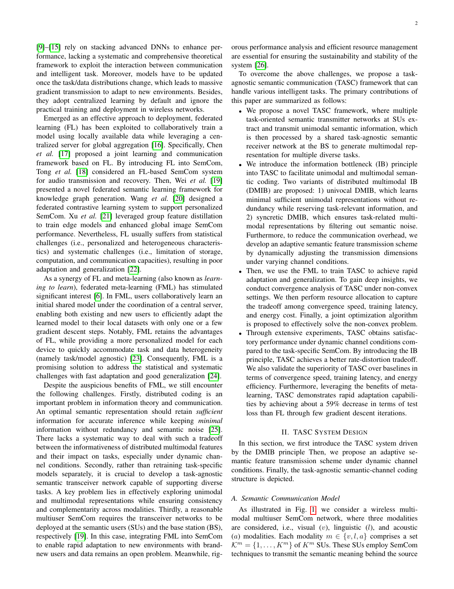
方法/架构图页：来自《Task-Agnostic Semantic Communications Relying on Information Bottleneck and Federated Meta-Learning》PDF p.2。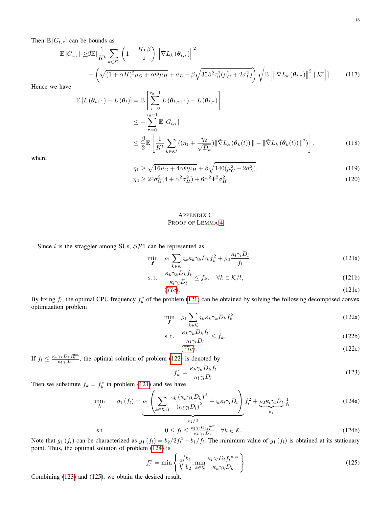
关键结果图/表页：来自《Task-Agnostic Semantic Communications Relying on Information Bottleneck and Federated Meta-Learning》PDF p.16。TASC 在多任务上接近 task-specific SemCom，且相对 vanilla FML 降低 test loss 并提升适配速度。
局限性与 Codex 判断
局限性：系统复杂，IB、FML、资源优化多模块耦合；初版报告后续应进一步补充每个数据集的网络细节。
判断：核心。DMIB 是语义编码原则。
Disentangled Information Bottleneck Guided Multidevice Cooperative Task-Oriented Semantic Communication
基本信息
| 字段 | 内容 |
|---|
| 作者 | Meiyu Sun, Dapeng Wu, Puning Zhang, Ruyan Wang |
| 发表/来源 | IEEE Transactions on Communications, 2026 / IEEE / 2026 |
| 标识 | IEEE 11442655; DOI 10.1109/TCOMM.2026.3675469 |
| 任务 | 多设备协同任务导向语义通信；common/private feature disentanglement 与 selective transmission。 |
数据集与 Baseline
| 字段 | 内容 |
|---|
| 数据集 | MNIST、CIFAR-10、Downsampled ImageNet、ModelNet40 等多视图/多设备任务。 |
| Baseline | DeepJSCC without IB、independent IB、DIB/multi-view baselines、selective transmission ablations。 |
| 评价指标 | classification/retrieval accuracy、mAP、communication cost、feature importance、saliency。 |
| 信道类型 | 多设备到边缘服务器的语义符号传输；考虑 SNR 和通信开销。 |
| 实验条件 | 先 basic IB 压缩，再 DisenIB 分解，再 MI-based selective transmission。 |
Introduction 讲述逻辑
- 多设备协同能提升任务性能，但各设备特征存在大量冗余。
- 粗粒度冗余消除不解释哪些特征共享、哪些特征私有。
- 本文用 Disentangled IB 把 common/private features 显式拆开。
方法概述
每个设备先用基本 IB 学局部 compressed semantic feature，再用 DisenIB 把特征拆为 common 和 private，最后根据 $I(V_k^c;\hat V)$ 与 $I(V_k^p;\hat V)$ 估计重要性选择传输。
信息瓶颈理论具体如何用上
公式/目标：基本 IB 的变分上界形如 $$\mathbb E[-\log q(y|z_k)]+\beta KL[p(z_k|x_k)\|q(z_k)].$$ DisenIB 目标包含任务项 $$-I(Y;\hat V)-\alpha\sum_k I(Y;\tilde V_k)$$ 与 disentanglement 项，鼓励 common features 共享、private features 与 common 独立。
变量含义：$X_k$ 第 k 设备输入，$Z_k$ 压缩 latent，$V_k^c,V_k^p$ common/private encoded features，$\hat V$ 聚合接收表示，$Y$ 任务标签。
给定一个 batch 时如何计算：训练分阶段：1) local semantic encoder 输出 $z_k$ 并计算 CE+KL 的 basic IB loss；2) global JSCC encoder 把各设备特征拆为 $v_k^c,v_k^p$；3) 用 CE 奖励聚合表示完成任务；4) 用一致性约束/MINE 最大化 common feature 共享信息；5) 用 density-ratio discriminator 最小化 $I(V_k^c;V_k^p)$；6) 训练后用 MI estimator 评估 common/private 特征对任务的贡献，选择性传输高贡献特征。
信道处理机制
信道影响多设备传输特征，selective transmission 根据特征重要性节省信道资源；IB 目标主要处理语义冗余和特征分解。
主要结果与图表
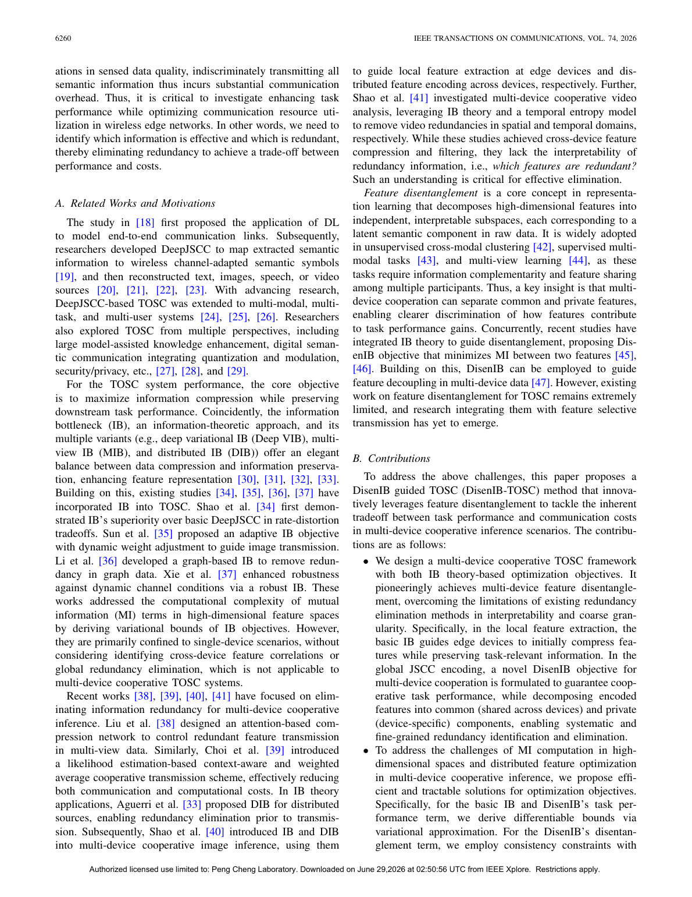
方法/架构图页：来自《Disentangled Information Bottleneck Guided Multidevice Cooperative Task-Oriented Semantic Communication》PDF p.2。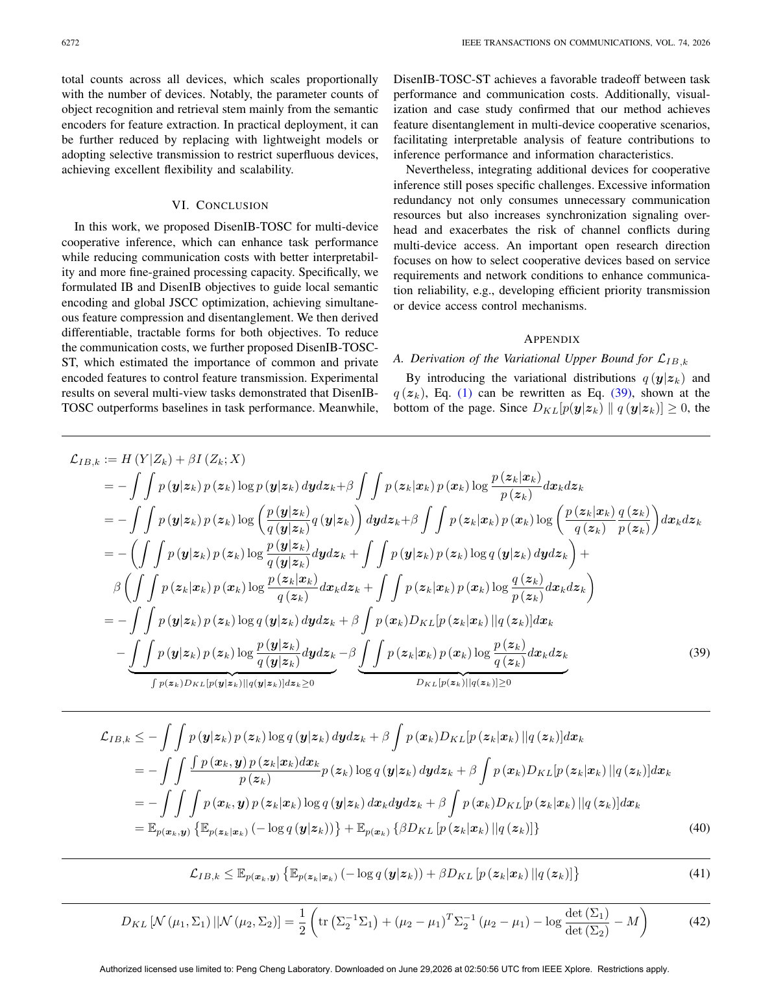
关键结果图/表页：来自《Disentangled Information Bottleneck Guided Multidevice Cooperative Task-Oriented Semantic Communication》PDF p.14。DisenIB-TOSC 在多任务上优于 baselines，并在减少通信成本时保持或提升任务性能。
局限性与 Codex 判断
局限性：训练阶段多、MI estimator 多，计算复杂度明显高于普通 TOSC。
判断：核心。DIB/DisenIB 是整个框架的理论根基。
Joint Source-Channel Coding for Task-Oriented Broadcast Communications: An Information Bottleneck Approach With Rate Splitting
基本信息
| 字段 | 内容 |
|---|
| 作者 | Youlong Wu, Jingfeng Huang, Yuanming Shi, Shuai Ma, Kai Niu, Meixia Tao, Khaled B. Letaief |
| 发表/来源 | IEEE Transactions on Wireless Communications, 2026 / IEEE / 2026 |
| 标识 | IEEE 11434868 |
| 任务 | 多任务 edge inference 的 task-oriented broadcast；Marton/rate-splitting + IB。 |
数据集与 Baseline
| 字段 | 内容 |
|---|
| 数据集 | EuroSAT/remote sensing 等多任务推理数据；TWC 版扩展更多任务。 |
| Baseline | DeepJSCC、Digital BPG/JPEG、single-phase IB variants、GLOBECOM 2023 broadcast IB。 |
| 评价指标 | task accuracy/error、reconstruction fidelity、SNR robustness、phase ablation。 |
| 信道类型 | multi-user broadcast channel；common/private codewords。 |
| 实验条件 | 两阶段 rate-splitting：common feature + task-specific private feature。 |
Introduction 讲述逻辑
- 多任务广播不仅要压缩，还要利用任务相关性和广播信道结构。
- 早期 IB broadcast 没有充分区分 common/private information。
- 本文把 Marton rate splitting 与 IB 对齐：共享任务信息走 common codeword，私有任务信息走 private codewords。
方法概述
Phase 1 提取 common feature $U_c$；Phase 2 在 $U_c$ 条件下提取各任务 private feature $U_k$。两阶段都用 variational IB objective 训练，并映射到 rate-splitting broadcast codewords。
信息瓶颈理论具体如何用上
公式/目标：Common phase: $$\mathcal L_{IB,c}= -I(Y;U_c)+\gamma I(X;U_c).$$ Variational bound: $$\mathcal L_{VIB,c}=\mathbb E[-\log p_\phi(y|u_c)]+\gamma\mathbb E[KL(p_\theta(u_c|x)\|r_c(u_c))].$$ Private phase: $$\mathcal L_{IB,k}= -I(Y_k;\hat U_k|\hat U_{c,k})+\eta I(X;U_k|U_c),$$ 同样化为 conditional CE + conditional KL。
变量含义：$X$ 输入，$Y$ 全任务标签集合，$Y_k$ 第 k 任务，$U_c$ common feature，$U_k$ private feature，$\hat U_{c,k},\hat U_k$ 是经信道到用户 k 的接收特征，$r_c,r_k$ 是变分 prior。
给定一个 batch 时如何计算：batch：1) common encoder 输出 $p(u_c|x)$，采样 $u_c$；2) common task head 预测多任务标签，算 CE；3) 计算 $KL(p(u_c|x)||r_c)$；4) private encoder 在 $x,u_c$ 条件下输出 $u_k$，经 broadcast channel 得到用户接收；5) private head 用 $\hat u_k,\hat u_{c,k}$ 预测任务 k 并算 CE；6) 计算 conditional KL $KL(p(u_k|u_c,x)||r_k(u_k|u_c))$；7) 按 gamma/eta 加权训练。
信道处理机制
将 IB common/private features 直接对应 Marton common/private codewords，使任务相关性和 broadcast channel degradation 结构一致。
主要结果与图表
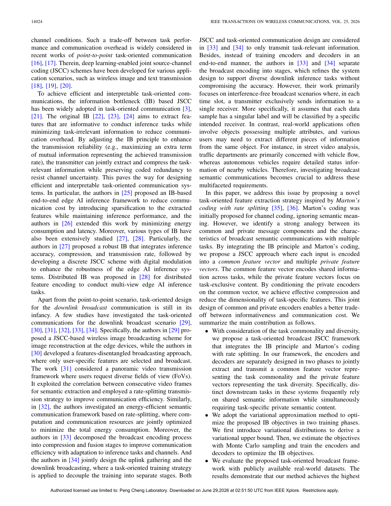
方法/架构图页：来自《Joint Source-Channel Coding for Task-Oriented Broadcast Communications: An Information Bottleneck Approach With Rate Splitting》PDF p.2。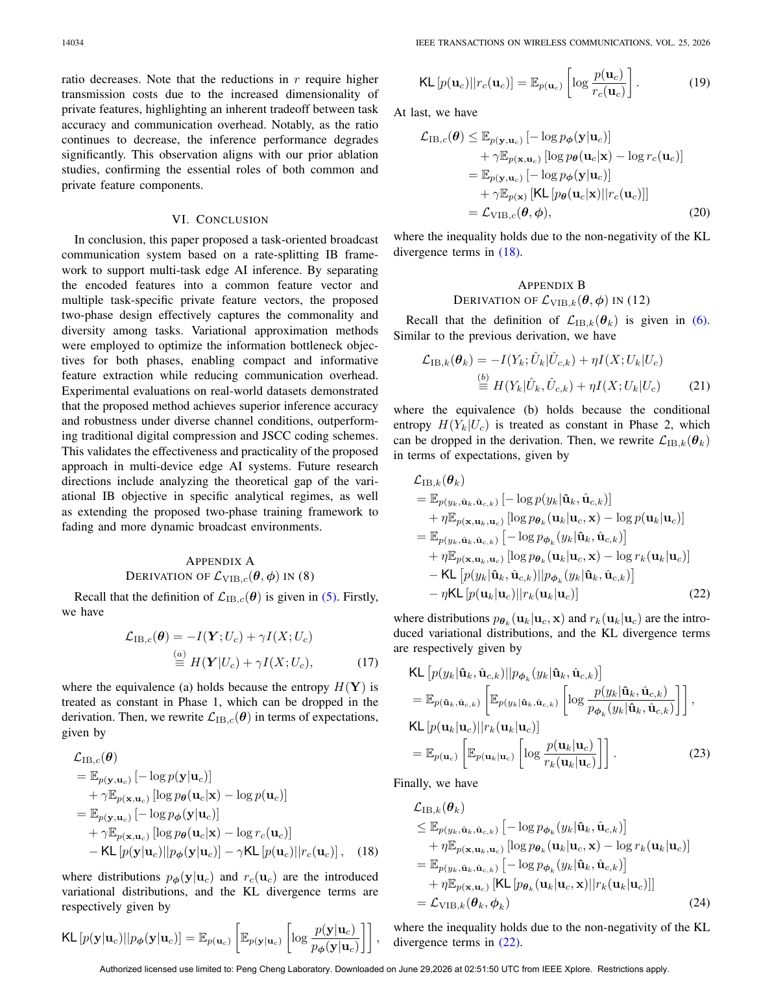
关键结果图/表页：来自《Joint Source-Channel Coding for Task-Oriented Broadcast Communications: An Information Bottleneck Approach With Rate Splitting》PDF p.12。Rate-Splitting IB 在 SNR sweep 和多任务扩展中优于 DeepJSCC 与单阶段 baselines。
局限性与 Codex 判断
局限性：模型和训练目标复杂；需要为不同任务/信道选择 common-private 拆分超参数。
判断：核心。TWC 完整版把 IB 与广播信息论结构深度结合。
Robust Information Bottleneck Guided Non-Autoregressive Semantic Communication With Synonymous Mapping
基本信息
| 字段 | 内容 |
|---|
| 作者 | Mingtong Zhang, Haixia Zhang, Dongfeng Yuan, Ping Zhang |
| 发表/来源 | IEEE Transactions on Wireless Communications, 2026 / IEEE / 2026 |
| 标识 | IEEE 11476854 |
| 任务 | 文本语义通信；非自回归语义解码；同义映射恢复 underlying semantics。 |
数据集与 Baseline
| 字段 | 内容 |
|---|
| 数据集 | European Parliament proceedings，约 2.2M English sentences，长度 4-30 words。 |
| Baseline | DeepSC、NA-DeepSC、Huffman-LDPC；RIB/decoder ablations。 |
| 评价指标 | BLEU、sentence similarity、decoding latency、model size/FLOPs。 |
| 信道类型 | AWGN、Rayleigh fading、imperfect CSI Rayleigh。 |
| 实验条件 | SCR R=2/4 等；synonymous sentence number M，replacement probability pr=0.2，beta sweep。 |
Introduction 讲述逻辑
- 文本 SemCom 常用 CE/MSE 等 syntactic loss，不能直接对齐 underlying semantic recovery。
- 自回归解码延迟高，不适合低时延语义通信。
- 本文把 RIB 和 synonymous mapping 结合，为语义等价恢复设计训练目标。
方法概述
RIB-NASC 采用 Transformer encoder 型非自回归 semantic decoder；通过同义句生成估计不可见 semantic source 的后验，从而计算 RIB 目标的变分下界。
信息瓶颈理论具体如何用上
公式/目标：$$\max I(S;\hat Z)+\beta\left[I(Z;\hat Z)-I(X;\hat Z)\right].$$ 训练时最小化 negative variational lower bound $$\hat{\mathcal L}_{VRIB}(\theta,\phi)$$，其中 $I(S;\hat Z)$ 用 synonymous mapping 后验估计，$I(X;\hat Z)$ 用 variational upper bound，$I(Z;\hat Z)$ 用 Donsker-Varadhan/MINE-like lower bound。
变量含义：$X$ 原句，$S$ underlying semantic source，$Z$ 发送语义表示，$\hat Z$ 经信道接收表示，$X_{syn}$ 是同义句集合，$p_\phi(s|\hat z)$ 由多个同义句 posterior 近似。
给定一个 batch 时如何计算：对一个文本 batch：1) 对每句 x 生成 M 个 synonymous sentences；2) encoder 产生发送表示 z，经信道得到 $\hat z$；3) 非自回归 decoder 并行预测句子 token；4) 用同义句后验求和估计 $p(s|\hat z)$，计算语义充分性项；5) 用变分 prior 估计 $I(X;\hat Z)$ 的 KL 上界；6) 用 MI estimator 估计 $I(Z;\hat Z)$；7) 合成 $\hat L_{VRIB}$ 更新通信模型和 MI 模块。
信道处理机制
RIB 目标显式包含 $I(Z;\hat Z)$，因此信道后的表示保真是训练目标一部分；同义映射让模型不只追 token exact match。
主要结果与图表
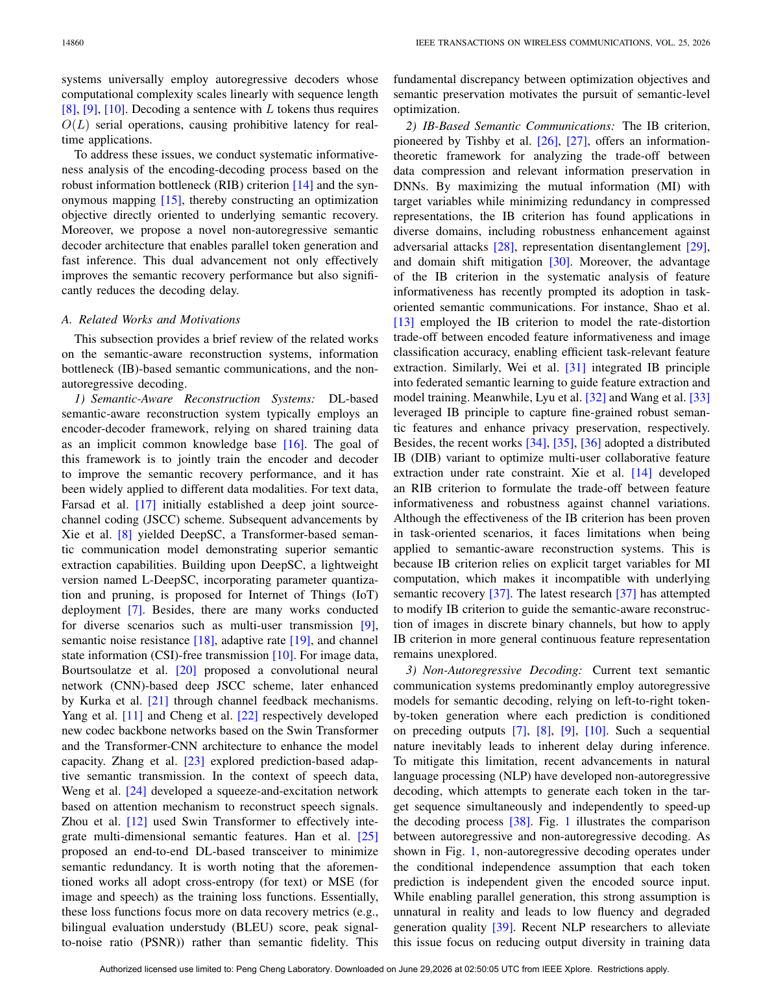
方法/架构图页：来自《Robust Information Bottleneck Guided Non-Autoregressive Semantic Communication With Synonymous Mapping》PDF p.2。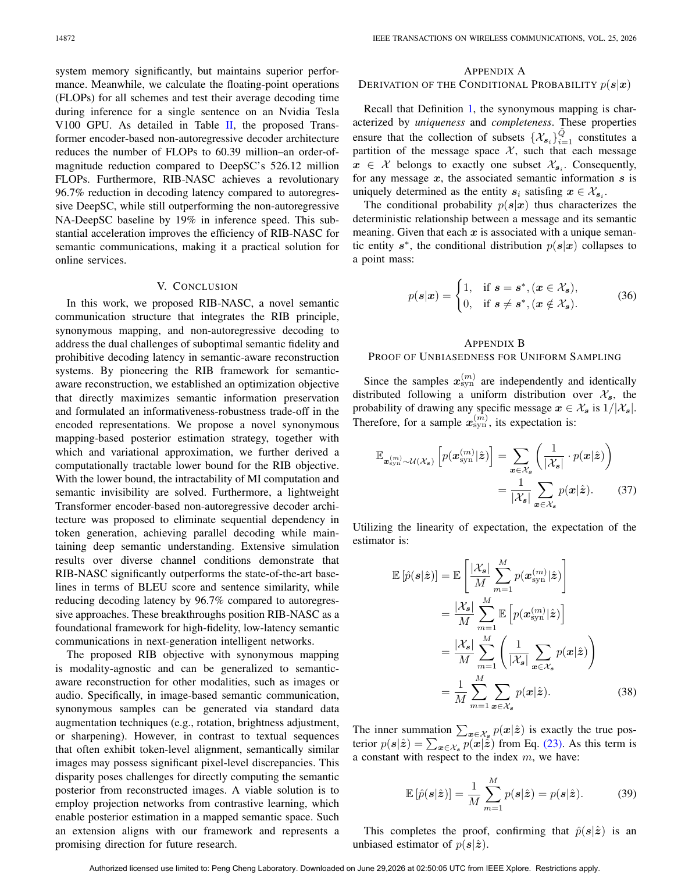
关键结果图/表页：来自《Robust Information Bottleneck Guided Non-Autoregressive Semantic Communication With Synonymous Mapping》PDF p.14。RIB-NASC 在 BLEU 和 sentence similarity 上优于 DeepSC/NA-DeepSC，并将自回归 decoding latency 降低约 96.7%。
局限性与 Codex 判断
局限性：同义句生成和 posterior 近似带来训练复杂度；语义等价质量依赖 synonym generation 质量。
判断：核心。IB 目标、同义后验估计和训练算法全部围绕 RIB 展开。
TOIB: Task-Oriented Orthogonalised Information Bottleneck for Distributed Semantic Communication
基本信息
| 字段 | 内容 |
|---|
| 作者 | Jiaxiang Wang, Zhaohui Yang, Yahao Ding, Ye Hu, Mohammad Shikh-Bahaei |
| 发表/来源 | arXiv:2604.11053 / arXiv / 2026 |
| 标识 | arXiv:2604.11053 |
| 任务 | 多用户分布式语义通信分类，抑制 cross-user semantic interference。 |
数据集与 Baseline
| 字段 | 内容 |
|---|
| 数据集 | CIFAR-10 classification。 |
| Baseline | Deep JSCC、multi-user Deep VIB (alpha=0)、single-user upper bound。 |
| 评价指标 | classification accuracy、cross-decoding accuracy、latent visualization、SNR sweep。 |
| 信道类型 | AWGN 多用户语义通信；低 SNR 强调鲁棒性。 |
| 实验条件 | beta=0.1，alpha=0.01；两用户/多用户 cross-user pair。 |
Introduction 讲述逻辑
- 已有 IB-based SemCom 多聚焦单用户，忽视多用户 latent 表示之间的耦合和干扰。
- 并行优化多个用户的 IB 目标会导致 latent-space redundancy 或 cross-decoding 错误。
- 本文在 IB 中加入 task-conditioned orthogonality 项。
方法概述
TOIB 为每个用户学习 VIB 表示，同时构造 matched/mismatched cross-user pairs，用条件互信息正则约束不同用户 latent 在任务条件下尽量正交。
信息瓶颈理论具体如何用上
公式/目标：$$\mathcal L_{TOIB}=\sum_i[-I(U_i;Y_i)+\beta I(X_i;Z_i)]+\alpha\sum_{i\ne j}I(Z_i;Z_j|W_{ij}).$$ 变分形式包含 CE、KL 和 CLUB 条件互信息估计。
变量含义：$X_i$ 用户 i 输入，$Z_i$ 用户 i 语义 latent，$Y_i$ 信道接收表示，$U_i$ 任务标签/语义目标，$W_{ij}$ 是 task-conditioning pair variable，$\alpha$ 控制跨用户正交。
给定一个 batch 时如何计算：batch 训练：1) 每个用户 encoder 输出 latent posterior 并采样 $z_i$；2) 经信道得到 $y_i$，classifier 计算 CE；3) 每用户 KL posterior-prior 计算 compression 项；4) 构造用户对 $(i,j)$ 和条件变量 $W_{ij}$；5) CLUB estimator 估计 $I(Z_i;Z_j|W_{ij})$，作为 orthogonality penalty；6) 三部分合成 loss 并交替更新通信网络和 CLUB estimator。
信道处理机制
信道噪声进入 $Y_i$，CE 项在 noisy received representation 上计算；orthogonality 项减少跨用户语义干扰。
主要结果与图表
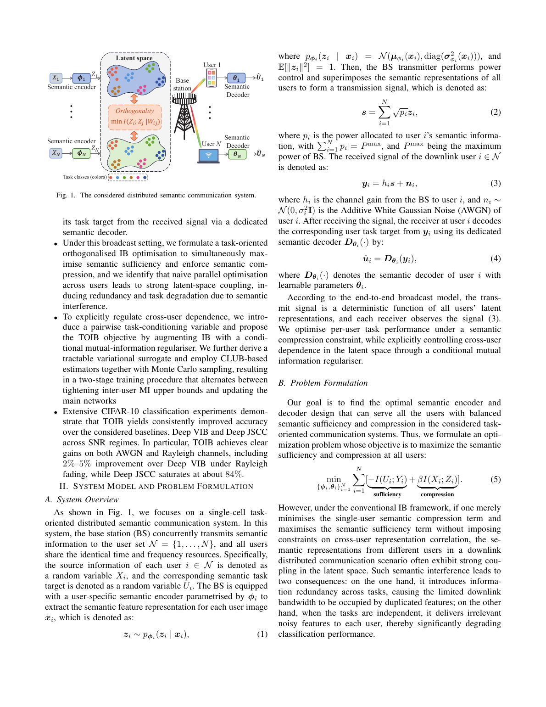
方法/架构图页：来自《TOIB: Task-Oriented Orthogonalised Information Bottleneck for Distributed Semantic Communication》PDF p.2。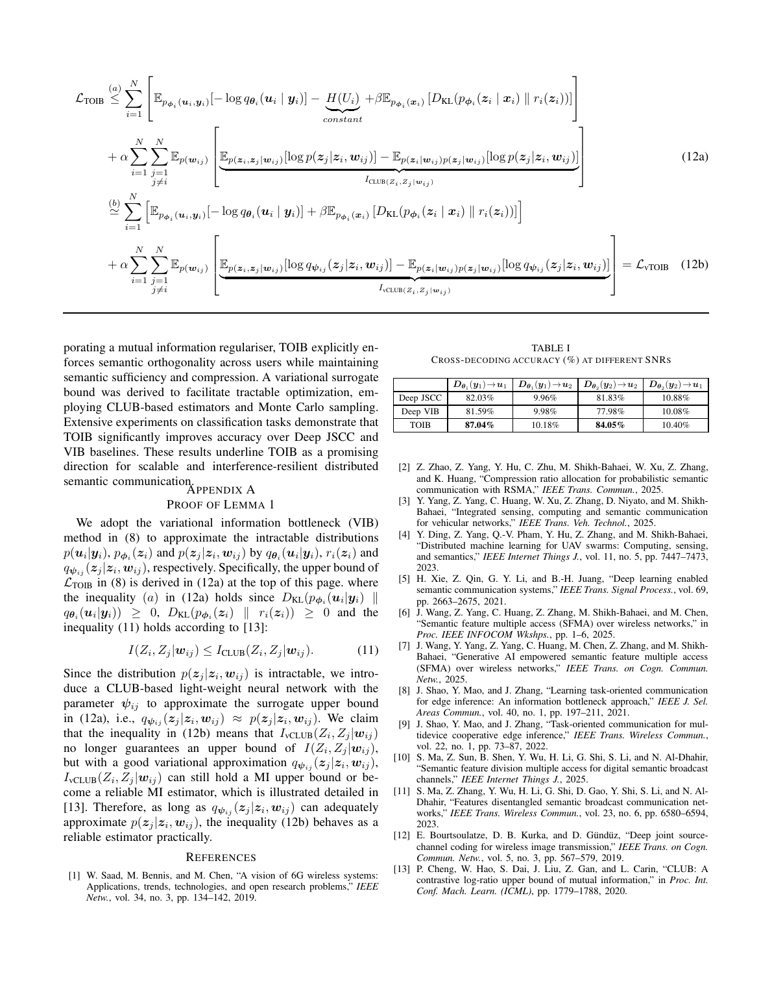
关键结果图/表页：来自《TOIB: Task-Oriented Orthogonalised Information Bottleneck for Distributed Semantic Communication》PDF p.6。TOIB 在多 SNR 下优于 Deep JSCC 和 Deep VIB，cross-decoding accuracy 显示用户间语义干扰被压低。
局限性与 Codex 判断
局限性：2026 arXiv 初稿，实验主要 CIFAR-10 分类，尚需更多模态和真实无线验证。
判断：核心。它把 IB 扩展为带条件互信息正交项的多用户目标。